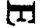

Özgür Adalar
Yok, olamaz, dedi mavnacı.
Sanmayın ki bilmediğimizden kaybettik yolu.
Adalar aynı ama şimdi yerleri farklı.
Ne sabit durur bu topraklar,
Ne de kimseye tek kuruş hayrı dokunur.
İşte bu yüzden böyle adlandırılır
Ve böyle bilinirler bu, açık denizde gezinen adalar.
Adaların yarattığı tehlike ve tuzaklarda;
Birçok gözü pek gezgin batmıştır buralarda.
***
Üzerinde, uğursuz sessiyle hiç susmadan çığlıklar atan
Kötü bir baykuşun yaşadığı,
Bütün şen kuşların yuvasından uzakta.
Her yanı kaybolmuş ruhların
Acı inlemeleriyle dolu,
Hâlâ çürümüş ceset isteyen
Açgözlü bir mezar gibi karanlık, kasvetli, bunaltıcı.
Şehrin dışındaki bir alana yığılmış öbek halindeki yirmi beş kül yığınını gözünüzde canlandırın. Bazılarının denizin ortasında yükselmiş dağlar ve boş araziler olduğunu hayal edin. Bu, size Efsunlular ya da Efsunlu Adaların genel görünüşü hakkında bir fikir verecektir. Adadan ziyade büyük bir yangınla cezalandırıldıktan sonra olabildiğince özgür bir biçimde dünyayı seyreden sönmüş yanardağları andırıyorlar.
Issızlık açısından yeryüzündeki herhangi bir noktanın bu adalarla benzerlik gösterip göstermediğinden kimse emin değildir. Uzun yıllar önce terk edilmiş mezarlıklar, parça parça dökülerek harabeye dönmüş eski şehirler... Bunlar yeterince hüzünlü; ama bir zamanlar insanlıkla ilgisi olan diğer her şey gibi, hâlâ içimizde şefkat duyguları uyandırıyorlar; hazin de olsa... Bu yüzden ölü deniz bile, zaman zaman uyandırdığı başka duyguların yanında, hoş duygularla bu kutsal yere hafif dokunuşlarda bulunmadan duramıyor.
Ve yalnızlığa gelince... Kuzeyin büyük ormanları, keşfedilmemiş suların enginliği, Grönland’in buz kaplı alanları, insan gözünün görebileceği en derin yalnızlıktır. Ama hâlâ değişken akıntıları ve mevsimleri onların korkusunu hafifletir; çünkü insanoğlu tarafından ziyaret edilmemiş bile olsalar, bahar bu ormanları ziyaret eder; en uzak denizler bile, aynı Erie Gölü gibi, tanıdık yıldızları yansıtırlar ve güzel bir kutup gününün açık havasında, ışıl ışıl masmavi buz, malakit gibi güzel gözükür.
Ama Efsunluların üzerinde, onları Idumea ve Kutupların yalnızlığının ötesine götüren bir lanet -öyle adlandırılabilir- var. Onlarda değişim asla gerçekleşmez; ne mevsimler değişir ne de keder. Ekvator çizgisine sonbaharı bilir ne de ilkbaharı. Her şey küle dönüşmüş; geriye kalan sadece harabeler. Sağanak yağışlar çölü serinletir ama bu adalara bir damla bile yağmur düşmez. Çürümeye bırakılıp yarılmış balkabağı gibi kızgın güneş altında ebedi bir kuraklığa mahkûm edilmişler. Efsunluların inleyen ruhu sanki “Bana acıyın,” diye bağırır. “Bana acıyın ve bana Lazarus’u gönderin ki parmağının ucunu suya batırıp dudaklarımı nemlendirebilsin - alev alev yanıyor ve acı çekiyorum.”
Bu adaların göze çarpan diğer bir özelliği yaşamaya elverişli olmamaları: Öylesine ıssız ki çakalın bile yemyeşil Babil’in çöpleri arasına sığınması gerek. Ama Efsunlular toplum dışına atılmış yaratıkları bile barındırmayı kabul etmez. Ne insanoğlu ne de kurt onlara sahip çıkar. Burada az miktarda sürüngen yaşar sadece. Kaplumbağalar, kertenkeleler, çok büyük örümcekler, yılanlar ve egzotik doğanın en tuhaf yaratıkları iguanalar. Ne alçak bir ses, ne bir uluma duyulur; buradaki yaşamın tek sesi tıslamadır.
Hiç bitki örtüsü bulunmayan bu adaların çoğu Aracama nın boşluğundan daha beterdir. Ne meyvesi ne de bir adı olan fırça gibi çalıların birbirine dolanmış ince dalları ya da eğri büğrü bir kaktüs ağacının kavrulmuş sürgünü, yanmış kayaların derin çatlaklarından çıkar ve hain bir biçimde onları kaplar.
Sahilin birçok yeri kaya, daha da doğrusu cüruf kaplı. Demir bir ocaktan çıkan siyahi ya da yeşilimsi bir maddenin dökülmüş parçaları gibi... Sağda solda kıyıya vuran denizin, köpüklerinin öfkesini akıtarak oluşturduğu koyu renk çukurlar ya da mağaralar, ürkütücü kuşların kasvetli seslerini yükselterek çığlık çığlığa uçuşlarla ortasında süzüldüğü gri ve yorgun bir sis tabakasıyla çevrili... Deniz ne kadar sakin olursa olsun bu dalgalara ve kayalara hiç dinlenme yok; açık deniz kendiyle ne kadar barışık olursa olsun şiddetle çarpar onlara. Sulak Ekvator’un bu kısmına özgü karanlık ve bunaltıcı günlerde, sahilde uzak tehlikeli yerlerdeki bağımsız beyaz anaforların ve dev dalgaların arasında çoğu kendi kendilerine yükselen bu karanlık ve cam haline gelmiş kütleler ölüler diyarına aitmiş gibiler. Bu tür bir kara parçası ölü bir dünya dışında hiçbir yerde olamaz.
Sahilin yangının izlerinden uzak bölümleri, büyüleyici Palmiye Adalarından batı ve güneye doğru uzayan karanlık öteki dünyayı kaplayarak; sayısız cansız deniz kabuğu ve tek tük çürümüş şeker kamışı, bambu, hindistan cevizi parçalarının bulunduğu geniş kumsal boyunca uzanır. Cennetten Tartarus’a kadar arada bir, belirsiz bir güzelliğin kalıntılarıyla iç içe girmiş, yanmış orman parçaları ve viranelerin çürüyen kaburgalarını göreceksiniz. Hemen hemen bütününde bulunan geniş oluklarda, anafor yapan karışık dalgalar gözlemlendiğinde son ikisinin buluşmasına kimse şaşırmayacaktır. Hava akımlarındaki değişimler denizdekilerle bütünleşir. Rüzgâr hiçbir yerde, Efsunlular’da olduğu gibi, hafif, değişken ve şaşırtıcı sakinliğe bu kadar bağımlı değildir. Gemiyle, aralarındaki mesafe doksan mil civarında olan bir adadan diğerine gitmek akıntı yüzünden bir ay sürer; çekici tekneler, geminin kayalıklara sürtünmesini zar zor engeller, ama hiçbir şey onu seyahatinden alıkoyamaz. Zaman zaman, eğer görüş mesafesine girmeden önce bir sonraki akıntı göz önüne alınmazsa uzaktaki bir teknenin diğerlerini yakalaması imkânsızdır. Diğer zamanlarda ise, adaların arasından geçmekte olan bir gemiyi, ona mahkûm olmasa da karşı koyulmaz bir biçimde çeken içe doğru esrarengiz bir akıntı vardır.
Günümüzde de bir noktaya kadar olduğu gibi, bir ara, denizcilerin Efsunlu Karalar diye adlandırdığı bu yerde balina avcılarının kalabalık gruplar haline balina yağı uğruna dolaştıkları doğrudur. Ama uygun bir yerde açıklanacağı gibi, bu Albemarle adasının açıklarındadır. Yani daha küçük adaların karmaşasından uzak, denizin daha geniş olduğu bir yerde. Ve bu yüzden, o civarda akıntı zaman zaman sanki şımarıklık yapıyormuş gibi, yön değiştirerek alışılmadık biçimde güçlü olsa da, yukarıda söz edilen ifadeler burası için geçerli değil.
Aslında, bütün adaların açığında akıntının oldukça garip bir biçimde etkili olduğu ve saatte 4-5 mil süratle yol almasına rağmen geminin rotasını değiştirmek zorunda bırakacak kadar güçlü ve düzensiz olduğu mevsimler var. Bu yüzden denizcilerin hesaplamalarındaki fark, hafif ve değişken rüzgârların yanında, uzun süre öncesine dayanan, orada, Efsunlular a paralel, yaklaşık yüz fersah uzaklıkta iki farklı adalar kümesinin olduğu kanaatinden kaynaklanırdı. Bu düşüncenin sebebi daha eski çağlarda, oraya giden korsanlar ve Pasifik’in o bölgesinin, en geç 1750’lere kadar uzanan haritalarıdır ki bunların yanılgı olduğunu söylemek daha uygundur. İspanyolların onlara Efsunlu ya da Efsunlu Adalar demesinin sebebi, kuvvetle muhtemel adaların mevkiindeki bu belirsizlik ve gerçekdışılıktı.
Ancak, artık var oldukları aşikâr olduğundan, günümüzün denizcisi, yapılarından etkilenmeden, bu ismin verilmesinin sebebinin kısmen, adaları önemli ölçüde kuşatmış olan ıssızlığın büyülü havasından kaynaklanmış olabileceğini düşünmeye meyilli olacaktır. Hiçbir şey, bir zamanlar canlı olanların bu kadar kötü bir biçimde küllere dönüştüğünü daha iyi ortaya koyamaz. Bu adalar, yaklaşınca sanki Sodom’un elmalarına benzer.
Yerleri konusunda kararsız kalmak akıntılar yüzünden gibi görünse de, en azından sahile kadar, hepsi benzer gözükürler: sabit, eğrilmiş bükülmüş ve bir cesedin soluk bedenine yapıştırılmış gibi...
Başka bir duyguyla bile olsa isimleri de, efsunlu diye adlandırılmaları da, yanlış değildir. Çünkü bu ıssız yerlerin, ikinci bir İspanyolca isim olan Gallipagos diye adlandırılmasına neden olan garip sürüngen yerlilerine, orada bulunan kaplumbağalara dair çoğu denizcinin, yıllardır sıkı sıkıya bağlı olduğu korkutucudan ziyade gülünç bir batıl itikat vardır. Ciddi bir biçimde bütün zalim denizcilerin, özellikle de reis ve kaptanların ölüm anında (bazı durumlardan ölümden önce) kaplumbağalara dönüştüğüne ve o günden beri bu sıcak kurak toprakta, Kötülük Tanrılarına özgü yalnızlıkta yaşadıklarına inanırlar.
Şüphesiz, böylesi garip biçimde hazinli bir düşünce manzaranın kendi hüznünden, ama belki de en çok kaplumbağalardan ilham almıştır. Çünkü bu yaratıkların görüntülerinde, fiziksel özelliklerinin dışında, garip bir biçimde kendi kendilerini hapsetmiş gibi bir şeyler vardır. Bitmeyen hüzün ve cezai umutsuzluk, bu hayvanlarda olduğu gibi başka hiçbir hayvan türünde böylesi ifade edilmiyor; olağanüstü uzun yaşadıkları düşüncesi bile bu izlenimi değiştirmeyi başaramıyordu.
Anlamsız bir biçimde büyüye inanma suçlamasıyla karşı karşıya kalma riski bile bazen, hatta temmuz ve ağustosta kalabalık şehri terk edip, şehrin etkisinden uzak ve doğanın gizemine nispeten daha yakın Adirondack Dağları nda dolaştığım şu anda da, bunu kabullenmeme engel olamaz. Böyle zamanlarda, ağaçlarla kaplı bir vadinin, yıldırım çarpmış çam ağaçlarının güçsüz gövdeleriyle çevrili, yosunlu zirvesinde otururken sanki rüyadaymış gibi, Efsunlu Adalar’ın kavrulmuş kalbinde yaptığım diğer gezintilerim gelir aklıma. Gölgeli deniz kabuklarının görünüp kaybolmalarını ve yapraksız çalılardan fışkıran uzun ve cansız sapları hatırlarım. Ve bir kez daha denizin uzaktaki cama benzer kayaları aşındırdığını ve üzerlerindeki oluklarda yıllar boyu kısıtlı su birikintileri arayışındaki kaplumbağaların ağır ağır sürüdükleri ayaklarının oluşturduğu derin çizgileri fark ederim. Gerçeği söylemek gerekirse, zamanında uğursuz bir biçimde efsunlanmış toprakta uyumuş olduğum duygusuna güçbela dayanabilirim.
Hayır, bu, aslında, hatıralarımın canlılığı ve Gallipagos söz konusu olduğunda zaman zaman göz yanılmasının kurbanı olup olmadığını bilmediğim fantezilerimin sihridir. Bu yüzden, genellikle sosyal ortamlarda, özellikle de eski malikânelerde mum ışığında düzenlenen ve gölgelerin tenha ormanın perili ağaçları gibi köşeli ve ferah salonların uzak girintilerinde oynaştığı partilerde, bu hayali yalnızlıklardan yavaş yavaş ortaya çıkan ve sırtında canlı canlı yanmakta olan harflerin anısıyla zeminde ağır ağır sürünerek ilerleyen devasa bir kaplumbağanın hayaletiyle karşılaşmış gibi görünen sabit bakışlarım ve durumundaki ani değişiklik yüzünden arkadaşlarımın ilgisini çektiğim olmuştu.
Kaplumbağanın İki Yüzü
Doğa ananın bile görmek istemeyeceği kadar çirkin şekilleri
Ve daha da çirkin suretleri,
Ya da onun en fettan anında elinden kaçan en büyük
hataların utançları,
Şekilsizliğin bütün dehşet verici çeşitleri,
Tüm bunlarla karşılaşan bir insan dehşete düşerse şaşmamalı,
Adaların büyüsüne tutulmuş yaratıkların çirkinliği ile
karşılaştırıldığında
Kendi toprağımızda yaratabileceğimiz dehşet
Ancak bir böceğin bebeği korkutması kadar olacaktır.
***
Korkma, dedi hacı sonra tüm bilgeliğiyle.
Çünkü bu canavarlar gerçekte orada değil;
Kılık değiştirmiş korkunç biçimlerde.
***
Ve erdemli asasını kaldırınca, heybetli kalabalık
uçarcasına gizlice uzandıkları ulu Zetht’in bağrına kaçtı.
Verilen tarife bakarak herhangi biri Efsunlular’da mutlu olabilir mi? Evet; mutluluğu bulan biri mutlu olacaktır. Ve aslında karalar bağladıklarında belki de kasvetin sebebi tam olarak adalar değildir. En azimli halimin bile, karanlık girintisinden çıkan hayalet kaplumbağa bakışımı engelleyemeyeceği gibi hiçbir izleyici onların en kutsal ve batıl düşüncelere katkılarını inkâr edemez. Ama kabuğu karanlık ve kasvetli olan kaplumbağanın bile, hâlâ ışıltılı bir tarafı var; arada bir uçuk sarımsi ya da altın rengi görünen kabuğunun altından çıkan et parçası ya da göğüs zırhı... Daha da ötesi, herkes su kaplumbağaları gibi kara kaplumbağalarının da sırt üstü çevrildiklerinde kendilerini düzeltme olasılığı ve eski görünüşlerine dönme olanağı olmadan parlak taraflarını ortaya çıkartan türden olduklarını bilir. Ancak, bunu yaptıktan sonra bile kaplumbağanın karanlık tarafı olduğunu inkâr etmemelisiniz. Parlaklığın tadını çıkarın; eğer yapabilirseniz sürekli ters tutun; ama dürüst olun ve karanlığı inkâr etmeyin. Karanlığı saklamak ve onun güneşteki büyük bir kabağa benzer canlı yönünü ortaya çıkarmak amacıyla kaplumbağayı doğal pozisyonundan çeviremeyen kişi de aynı sebeple bu yaratığın kapkara bir leke olduğunu iddia edemez. Kaplumbağa hem karanlık hem de parlaktır. Bırakın ayrıntılara bakalım.
Bu ada kümesinin sahiline ilk ayak basmamdan birkaç ay önce gemim yakınlarından geçmekteydi. Bir öğle vakti kendimizi Albemarle’nin güney burnunun açıklarında bulduk; karadan fazla uzak değildik. Biraz meraktan, biraz da böylesi garip bir yeri gözlemlemek için, neler yapılabileceğini araştırmak ve ayrıca taşıyabilecekleri kadar kaplumbağa getirmek üzere bir teknenin mürettebatı kıyıya gönderildi.
Bu maceraperestler geri döndüklerinde gün batmıştı. Sanki bir kuyunun kenarından bakıyormuş gibi geminin yüksek tarafından aşağıya baktım ve olağandışı ağırlıktaki yükü yüzünden neredeyse denize batmış ıslak kayığı gördüm. Üzerinden halatlar sarkıyordu; epey zorlandıktan sonra, çok yaşlı görünen devasa büyüklükteki üç kaplumbağa alelacele güverteye alındı. Bu dünyadan olduklarına inanmak çok güçtü. Beş uzun aydan beri uçsuz bucaksız sulardaydık ki bu, hülyalı zihinlerde karaya ait her şeyi olağanüstü renkli göstermeye fazlasıyla yeterli bir süreydi bu. O sırada gemiye üç İspanyol gümrük memuru çıksaydı, muhtemelen onlara aynı merakla dik dik bakar, dokunur ve uygar misafirlere hizmet eden vahşilermiş gibi davranırdım. Ama üç gümrük memuru yerine bu gerçekten harikulade kaplumbağaları seyrediyordum. Okul çağlarında tanıdığım çamur kaplumbağalarıyla ilgileri yoktu; yüzeyleri savaşa göğüs germiş kalkanlar gibi çukur ve kabartılı; bedenlerini zırh gibi kuşatan, sanki madalyon takmışçasına orası burası yeşil yosunla kaplı ve denizin serpintileriyle yapış yapış olmuş büyük kabuklarıyla bir dulun matem elbisesi kadar kara, madeni bir sandık kadar ağırdılar. Bir gece aniden ifade edilemez yalnızlıklarından alınıp bizim insan dolu güvertemize getirilen bu gizemli yaratıklar, beni açıklanması zor bir biçimde etkilemişti. Sanki az önce dünyanın merkezinden sürünerek henüz çıkmış gibiydiler. Evet, onlar Hinduların yeryüzüne bıraktığı kaplumbağaların eşiydi. Bir fener alarak onları daha yakından inceledim. Böylesi ulu, muhterem bir görünüş! Sert kabukları örten ve yorgun zırhlarındaki çatlakları kapatan böylesi kürk gibi bir yeşillik. Artık üç kaplumbağa görmüyordum. Büyüdüler, büyüdüler ve şekil değiştirdiler. Sanki ihtişamla çöken üç adet Roma Kolezyum’una bakıyordum.
Ey, bu ve diğer adaların en eski sakinleri, üç duvarlı şehrinizin anahtarını verin bana diye yalvardım.
Bu yaratıkların tetiklediği müthiş duygu zamanın ötesindeydi: sonsuz, sınırsız bir varoluştu. Ve başka bir yaratığın, Efsunluların kaplumbağaları kadar uzun yaşayabileceğine ve nefes alabileceğine kolay kolay inanmam. Bütün bir yıl yemek yemeden yaşam sürdürme kapasiteleri konusunda bilginiz olmasa bile canlı zırhlarının ele geçirilemez silahlar olduğunu kabul edin. Başka hangi canlı bedeni zamanın saldırılarına direnebilecek böylesi bir kaleye sahip?
Fener elimde, yosunları kazıyıp, adaların boz dağlarındaki sayısız düşüşte oluşan eski yaraların izlerine —ki bunlar garip bir biçimde genişlemiş, şişmiş, yarı silinmiş, bazıları en yaşlı ağaçların kabuklarında bulunanlar gibi biçimsiz izlerdi- bakarken, kuş izlerini inceleyen ve hayaletleri bile artık ölmüş olağanüstü yaratıklar tarafından topraktan çıkarılmış taş yazıtlardaki şifreleri çözen geçmişe meraklı bir jeolog gibi görünüyordum.
O gece hamağımda uzanırken yukarıda üç hantal yabancının yüklü güverte boyunca yavaş ve bitap bir halde süründüklerini duydum. O kadar aptal ve azimliydiler ki bir engelle karşılaşınca asla bir köşeye çekilmediler. Bir tanesinin hareketleri gece nöbetinden hemen önce kesildi. Gün doğarken onu, pruva direğinin sabit ayağında bir şahmerdan gibi buldum. Hâlâ dişiyle tırnağıyla geçilmesi imkânsız yerden geçme mücadelesi veriyordu. Bu kaplumbağaların bir ceza, bir lanet belki de düpedüz bir büyücünün kurbanı olması, sahip oldukları bu tuhaf umutsuz uğraş sevdasında görülür. Seyahatlerinde kahramanca kendilerini kayalara çarptıklarını ve yerlerinden oynatıp yollarına devam etmek için uzun süre onları ittiklerini, sarstıklarını, sıkıştırdıklarını biliyordum. Taçlandırılmış lanetleri, kirletilmiş bir dünyadaki doğruluk için en zahmetli dürtüleriydi.
Arkadaşlarınınki gibi bir engelle karşılaşmayan diğer kaplumbağalar sadece kovalar, halat makaraları ve bobinleri gibi küçük engellerle karşılaşmışlar ve onların üzerlerine tırmandıkları zaman müthiş bir takırtıyla aşağıya kaymışlardı. Bu takırtı ve çarpma seslerini dinlerken onların yuvalarında olduğumu düşündüm; yani maden çukurları ve paramparça dağların yüreğine gömülü ve kilometrelerce karman çorman çalılarla kaplı, küçük kanyonlarla dolu bir adada... Bu üç basit canavarın, yüzyıllar sonra, hem ayakları altında büyüyen zehirli mantarlar hem de sırtlarında filizlenen kara yosunlar yüzünden acıdan kıvranarak, acımasız gölgeler içinden yavaş yavaş ve ağır ağır bir şekilde sürünerek çıktıklarını hayal ettim. Onlarla birlikte volkanik labirentler arasında kayboldum; çürümüş çalılıkların bitmez tükenmez dallarını koparttım. Taa ki kendimi bir rüyada bağdaş kurmuş vaziyette pruva direğinde otururken buluna kadar... Her iki yanımda da amuda kalkmış birer brahman rahibi vardı ve alınlarıyla papaz cübbesinin düşmesini önlüyorlardı.
Bu, benim Efsunluların kaplumbağaları hakkındaki ilk izlenimimin yarattığı korkunç bir kâbustu. Söylemesi garip ama ertesi gece gemici arkadaşlarımla oturup kaplumbağa etinden nefis bir yemek hazırladık; kaplumbağa yahnisi yaptık ve yedik. Sonra da bu kocaman üç adet çukur kabuğun üç adet tuhaf çorba kâsesine dönüştürülmesine yardım ettim ve kabuğun altındaki sarımsı düz kısmı parlatarak muhteşem üç tepsi haline getirdim.
Rodondo Kayası
Çirkin Reproach kayası olarak adlandırılan bu yükselti
Tehlikeli ve korkunç bir yer,
Ne balık yaklaşmıştır kıyılarına ne de bir kuş,
Yaşlı ve sefil martılarla beraber rüzgârda inler
Ve karabataklarla birlikte envai çeşit alıcı kuş
Kayalığın kıyılarına konup sessizce bekler.
***
Dalgalar kayaya çarptıkça hafifçe yankılanıp kendi
seslerine benzer cevabı alıyordu;
Ve kayada patladıkça dalgalar, bu seslerin arasından
ağırbaşlı bir ritim algılanıyordu.
***
Ve sonra yorgun kayıkçı rahatça çekti kürekleri. İzin verin
duysun o ender melodiyi.
***
Birden havalandı alıcı kuşlar,
Hınzır kanatlarla alelacele kanat çırpışlar,
Ürkütücü geceyi taciz eden çığlıklar,
Karanlığın rahatını bozuyorlar.”
***
Ve tepelerinde alıcı kuşlar sürüsü,
İşte burada konaklamış kötüler ordusu
Çok yüksek bir taş kuleye tırmanmak sadece kendi içinde çok iyi bir şey değil, aynı zamanda etrafındaki bölgenin geniş bir görüntüsünü elde etmenin en güzel yoldur. Hele bu kule yalnız ve kimsesizse çok daha iyidir. Aynı gizemli Newport’taki kule ya da viraneye dönmüş başka bir kalenin ayakta kalan tek sütunu gibi.
Neyse ki, Efsunlular söz konusu olduğunda, kendine özgü biçimi yüzünden eski İspanyolların Rodondo Kayası ya da Yuvarlak Kaya diye adlandırdığı göze çarpan bir kayanın üzerinde böylesi bir heybetli gözlem noktasına sahibiz. Güneyden doğuya doğru uzanan dağlık bir bölgede karadan on mil uzakta, denizden yaklaşık iki yüz elli fit yükselen bir kaya bu. Ünlü Campanile ya da Aziz Markin tek başına ayakta duran Çan Kulesi, çevresindeki eski binalara nazaran nasıl duruyorlarsa Rodondo Kayası da, büyük ölçüde, öyle durmaktadır.
Etrafa göz atmak için Efsunlular'ın tepesine tırmanmadan de önce bu deniz kulesi dikkat çekmektedir. Otuz mil mesafeden görünür ve bütün gruba hâkim olan sihre bütünüyle katkıda bulunarak uzaktan ilk görüldüğünde seyir halindeki gemileri yanıltır. Altın rengi, puslu bir öğlen vakti, sanki dört fersah uzakta görkemli yelkenlerini açmış İspanyol gemisi varmış gibi görünür. Üç direkte de yelkenler fora! Yelkenler fora! Yelkenler fora! Ama gece olunca, o büyülü firkateyn hızla sarp bir kaleye dönüşür.
Bu noktaya ilk gidişim sabahın griliğinde oldu. Balık tutmak amacıyla üç kayık indirmiş ve gemiden yaklaşık iki mil uzaklaşarak, tam şafaktan önce, kendimizi Rodondo’nun gölgesi altında bulmuştuk. Görüntü, yaklaştıkça, o saatteki tuhaf alacakaranlık yüzünden yumuşamıştı. Doğuda güneş ilk soluk ışıklarıyla doğduğunun işaretini verirken, batmak üzere olan muhteşem mehtap, denizin üzerinde gece yarısı azalan ateşin yaydığı gibi yumuşak tatlı bir renk yayarak, yarı tükenmiş deniz feneri gibi parlıyordu. Rüzgâr hafif, deniz sakindi; yıldızlar belli belirsiz parıldıyordu. Bütün doğa uzun gece nöbetinin miskinliğinde gibiydi ve sanki güneşin yorgun bekleyişini geciktiriyordu. Rodondo’yu mükemmel haliyle yakalamak için kritik bir saatti bu. Alacakaranlık, mucizenin soluk giysisini yok etmeden çarpıcı her noktayı açığa çıkartmak için tam kıvamındaydı.
Dalgaların sudan bir sarayın basamaklarını yalar gibi yaladığı kırık merdivene benzer tabanından sivri zirvesine doğru saçak saçak katmanlar halinde yükseliyordu bu kule. Kütleyi meydana getiren bu düzenli katmanlar ona, kendine özgü bir şekli veriyordu. Dümdüz bir biçimde etrafını kuşatan birleşim çizgileri, baştan aşağıya kademeli olarak birbiri üzerinde yükselen rafa benzer çıkıntılar oluşturmaktaydı. Ve eski ahır ya da manastır saçaklarının kırlangıçlarla yaşam bulması gibi bu kayalık çıkıntılarda sayısız deniz kuşlarıyla yaşam bulmaktaydı. Saçaklar üzerinde saçaklar, yuvalar üzerinde yuvalar... Sağında solunda kayayı tepeden tırnağa renklendiren ve uzaktan yelken gibi görünmesine sebep olan hayalet gibi beyaz ökse otları vardı. Eğer kuşların deli gibi şakımaları olmasa her şey büyüleyici bir sessizlik içinde olurdu. Onlara eşlik eden sadece bu saçaksı otların hışırtısı değil; kayanın tepesinden sürekli yer değiştiren bir çardak gibi yayılarak uçarken çıkarttıkları kendi kanat çırpışlarının sesiydi. Bu kule, etrafındaki yüzlerce fersah boyunca su kuşlarının tek dinlence yeriydi. Kuzeyde, doğuda ve batıda uçsuz bucaksız okyanus dışında bir şey yoktu; bu yüzden Kuzey Amerika, Polonezya ve Peru’dan gelen avcı kuşlar ilk molalarını Rodondo’da verirlerdi. Ama Rodondo bir kara parçası olmasına rağmen karacıl kuşlarının hiçbiri ona konmaz. Orada bir nar bülbülü ya da kanarya düşünebiliyor musunuz? Hançer gibi keskin gagalı alıcı kuşların ortasında kalmış zavallı bir bülbülün durumunun bir bedevinin eline düşmekten ne farkı var ki?
Yabani deniz kuşlarının tabiat tarihi Rodondo’da olduğundan daha iyi nerede incelenebilir bilmiyorum. Burası okyanusun kuş barınağıdır. Okyanusu boydan boya geçebilen kuşlar; her daim tek başına uçan ötleğenler ve gökyüzünün en dokunulmamış yerlerine ulaşabilen göçmen kuşlar buraya konar.
İlk olarak en alt, aynı zamanda en geniş ve suyun ulaştığı noktayla arasında küçük bir boşluk olan katmana göz atalım. Ne garip mahlûkatlar bunlar? İnsan gibi dimdik, ama tıpkı fazla muntazam olmayan heykel sütunlar gibi yukarıdaki saçaklara omuz vererek kayanın etrafında dikiliyorlar. Gövdeleri gülünç bir biçimde şekilsiz; gagaları kısa; ayakları sanki bacaksızmış gibi; yanlarındaki uzuvlar ne yüzgeç, ne kanat ne de kol. Aslında penguen de ne balıktır, ne insandır ne de kuş. Ne bir şenliğe ne de Paskalyaya ait olan bir yiyecek gibi; istisnasız insanoğlu tarafından şimdiye dek keşfedilmiş en gösterişsiz ve sevimsiz yaratık. Penguenler, üç elementle bağlantılı ve gerçekte hepsinin bazı temel özelliklerine sahip olsalar da hiçbirinde tam olarak yuvalarında değillerdir. Toprakta ağır aksak yürürler; denizde tek kürekle giden sandal gibi yüzerler; havada düşüverirler. Doğa Ana, sanki başarısızlığından utanır gibi, bu biçimsiz çocuğunu dünyanın en ücra köşesinde, Macellan Boğazı nda ve Rodondo’nun küçümsenen deniz seviyesinde gözden uzakta saklar.
Şimdi bir bakalım, bir üst katmanda sıralanmış şu mutsuz kalabalık da neyin nesi? Bu ne kadar garip ve iri kuş kümesi? Gri Manastır’ın deniz keşişleri: Pelikanlar. Uzun gagaları ve oradan sarkan ağır deri keseleri bu kuşlara çok hüzünlü bir ifade verir. Dalgın bir ırk olduklarından saatlerce bir arada hiç hareketsiz dururlar. Donuk, kül rengi tüyleri, sanki üzerlerine kül serpilmiş izlenimini verir. Bu pişman ifadeli kuş, Efsunluların yangın yeri kıyılarında gezinmeye son derece uygun; bu öyle sefil bir görüntü ki oralarda cefakâr Job1 oturup, yangından.arta kalan çanak çömlek kırıklarıyla kendi işkence edebilir.
Daha da yukarıda gördüğümüz, güzelliği ile hikâyelere ilham veren; büyülü Ümit ve Boynuz Burunlarının kar beyaz gölgeleri olan akrabalarına benzemeyen kuşlar çıkar karşımıza. Çirkin, hiç de şiirsel bir görüntüye sahip olmadığı halde çelişkili bir ifadeyle gri albatros diye anılan kuştur bu.
Katmandan katmana tırmandıkça kulenin sakinlerinin büyüklüklerine göre sıralandıklarını görürüz; sümsük kuşları, siyah ve alaca yelkovan kuşları, alakargalar, deniz kırlangıçları, balıkçıllar, değişik martı türleri: hiyerarşik bir düzenle birbirlerine hükmeden krallıklar, prenslikler, iktidarlar... Ve en tepede çok güzel bir goblen tablonun dört bir yanına serpiştirilmiş kuşlar gibi sürekli çığlıklar atarak dönüp duran fırtına kuşları...
Her ne kadar köylüler için bacanın kenarından gelen uğultular gibi denizciler için de bu kuşların pupa altındaki cıvıltıları uğursuzluk sayılsa da, fani hayatlarından dolayı okyanusun kelebekleri olarak da adlandırılabilecek parlak renkli gizemli sinek kuşlarının da Efsunluların özel büyüsüne katkıları olduğundan söz etmek gerek. Ama bu katkı, denizcilerin zihnindeki uğursuzluğu yok edemiyor.
Gün ilerledikçe bu ahenksiz uğultu artar. Vahşi kuşlar, kulak tırmalayan çığlıklarla ayin yaparlar. Sık sık sürü halinde kuleden havalanarak tepede dönüp duran gökyüzü korosuna katılırlar. O sırada aşağıdaki yerlerine aniden ortaya çıkan başka sürüler göz kulak olur. Ama ben, aşağıdaki bu keşmekeşin arasında, bir şelaleden su damlarının hızla akması gibi akıp giden borazana benzer, açık seçik notalar duyarım. Uzaklara bakar ve arkasında mızrağa benzer uzun bir tüyü olan kar beyazı, melek gibi bir şey görürüm. Bu, okyanusun parlak, neşeli horozudur. Ahenkli duayı başlatan ıslığıyla “Lostromo nun Dostu” olmayı hak eden güzel kuş...
Kanatlı ve puslu bir yaşama sahip Rodondo, su altını dolduran yüzgeçli ev sahipleri için de birebir aynıydı. Su hattının altında bu kaya, küçük balıkların konaklamasına uygun dolambaçlı ve gizli mağaraların oluşturduğu petek gibi görünmekteydi. Hepsi yabansı; çoğu çok güzel... Ve Japon balıklarının teşhir için konduğu değerli cam küreleri en güzel biçimde süsleyecek türden... Hiçbir şey, bu toplumun bireylerinin çoğunun farklılığından daha çarpıcı değildi. Burada renkler henüz boyanmamış; desenler işlenmemiş gibi görünüyordu.
Berrak suyun üst kısımlarında canlı, korkusuz, uysal, zaman zaman su üzerine sıçrayan balıklar varken, diplerde daha büyük, daha uyanık ve yavaş yüzen balıklar mevcuttu ki bizim balıkçılarımız oltalarını İkinciler için atıyorlardı. Ama ne yazık ki üst bölgeden geçiş yoktu. Kanca denize değer değmez baştan çıkarılmış yüzlerce balık yakalanma şerefine erişmek için savaşıyorlardı. Rodondo’nun zavallı balıkları! Kurban edilmiş inancınızla siz de insanları anlamadan onlara güvenen sayısız canlılardansınız.
Şafak yavaş yavaş güne döner. Deniz kuşları yiyecek aramak için birbiri ardına uzaklara yelken açar. Kule, dibindeki balık mağaralarıyla yalnız kalır. Boş kalan oyuklar, yüksek bir deniz fenerinin beyaz boyası ya da bir teknenin süslü yelkenleri gibi altın rengi parlar. On an, tam biz ölüme terk edilmiş bir kaya olduğunu düşünürken, diğer gezginler onun güzel, kalabalık bir gemi olduğuna yemin ederler.
Artık halatları alalım ve tırmanalım. Ama yavaş; bu o kadar da kolay değil.
Kayadan Vaat Edilmiş Topraklar Manzarası
Onu varolan en yüksek tepeye çıkarttı.
Ve oradan uzakları gösterdi.
Rodondo Kayasına tırmanmaya çalışırsanız, şu talimatlara uyun. Kraliyet Deniz Yollarının amiral gemisi gibi dünyanın çevresini üç kez dolaşın; sonra bir, iki sene Teneriffe’nin zirvesinde yabancılara yol gösteren rehberlere, sırasıyla mümkün olduğunca çok sayıda ip cambazına, bir Hint akrobata çıraklık yapın; bir dağ keçisi güdün. Bunları yaptıktan sonra gelin ve kulenin manzarasıyla ödüllendirilin. Oraya nasıl çıkacağımızı sadece biz biliriz. Diğerlerine söylememiz ne kadar bilge olduklarına bağlı. Burada, zirvede, sadece sen ve benim duruyor olmamla yetin. Balonla dolaşan herhangi biri veya gelecekte aydan bakacak olan adam daha geniş bir manzaraya sahip olabilir mi? Arzu eden, evrene, Milton’ın Kayıp Cennetinden baksın. Ya da Daniel Boone ile uçsuz bucaksız sulak Kentucky’i yeniden keşfetsin.
Sakın az ötedeki yanmış Efsunlu Adalara bakmayın. Yanlara doğru bakarak, güneye doğru devam edin. Hiçbir şey görmezsiniz; ama orada olmasa bile, kulenin eteklerini öpen engin denizde bazı ilginç nesnelerin olduğu yerleri göstermeme izin verin. Bakışlarımızı güney kutbuna doğru çevirmeden bakarız.
Şu an Ekvator’dan on mil ötesindeyiz. Doğuya doğru, yaklaşık altı yüz mil ileride, kıta uzanmakta. Bu kaya, Quito ile hemen hemen aynı paralelde.
Burada başka bir şeye daha dikkat edin. Güney Amerika sahili boyunca uzanan, ana karaya eşit mesafede uzak, birbirilerinden ise oldukça ayrı üç ıssız kümenin birindeyiz. Burası, oldukça garip bir biçimde Güney Amerika yapısını sonlandıran noktadır. Batıya doğru uzanan Polinezya zincirinin sayısız adaları arasında hiçbiri ne Efsunlularin ya da Gallipagos un, ne St. Felix ve St. Amrose adalarının ne de Juan-Fernandez ve Massafuero adalarının özelliklerini taşır. Birincilerden burada söz etmeye gerek yok. İkinciler Güney Tropik bölgesinin biraz yukarısında yer alırlar; birinde sığ bir kayalıkla bağlantılı, bire bir büyük bir adaya benzer, iki yuvarlak tepecik bulunan yüksek, yaşanması zor ve ıssız kayalar vardır. 33. Boylamda yer alan sonuncusu ise yüksek, vahşi ve ayrıktır. Juan Fernandez daha fazla açıklamaya gerek olmayacak kadar ünlüdür. Massafuero bir İspanyol ismidir; Ana karadan, komşusu Juan’dan daha uzak olan bu adanın böyle adlandırılmış olması gerçeği ifade etmektedir. Massafuero adasının on mil uzaklıktan görkemli bir görünüşü vardır. Bulutlu bir havada bir yönden yaklaşınca, tepesindeki sarkıklar, sarp yamaçları ve daha da ötesi geniş zirvesinin kendine özgü eğimi ona heybetli bir biçimde sürüklenen büyük bir buzul havası verir. Yamaçları, yanlarda loş şapelleri olan eski bir katedral gibi, karanlık mağaraya benzer girintilere ayrılmıştır. Gemideki eşkıya görünüşlü tayfaları izlediğiniz uzun bir yolculuktan sonra, bu kovuklardan birine denizden yaklaşıp, kayaların alçalarak size yaklaşan kıyılarını görmek gözlerin bayram ettiği garip bir duygu oluşturur.
Çeşitli zamanlarda, gemiden ayrıldığımız balık avlarında, bunların her birini ziyaret etme şansına sahip oldum. Birçok kısımları öylesine bozulmamıştır, öylesine sessiz ve ıssızdır ki teknesiyle sert falezleri altından onlara yaklaşmakta olan bir yabancıya verdikleri ilk izlenim onların ilk kâşifinin kendisi olduğudur. Bu arada, bu adalara ilk ayak basanların Avrupalılar olduğundan söz etmeye değmez; keza aynı şey, söylenecek olduğu gibi, bizim Efsunlular keşfimiz için de geçerlidir.
1563’ten önce, İspanyol gemilerinin Peru ve Şili’den yaptığı yolculuklar çok zordu. Bu kıyı boyunca genellikle güney rüzgârları egemendir ve o yıllarda İspanyollar, eğer karayı göremezlerse durmadan esen bu tek yönlü rüzgârın onları bir daha geri dönemeyecekleri uçsuz bucaksız sulara sürükleyeceği yönündeki batıl inançları yüzünden karaya yakın gitmek gibi değişmez bir adet vardı. Burada, girintili çıkıntılı burunların, resiflerin ve kayalıkların arasında, genellikle hafif ama bazen günler, haftalar boyu son derece sakin, yine de durmadan esen rüzgâra karşı yol alan tekneler, geçitlerde genellikle günümüzde anlaşılması zor büyük zorluklara mücadele ederlerdi. Bu gemilerden birinin on gün süreceği tahmin edilen bir yolculuğa başladığı, ama dört ay boyunca denizde kaldığı ve aslında limana asla varamadığı; sonunda sürüklenerek karaya oturduğu söylentisi deniz faciaları kayıtlarında mevcuttur. Söylemesi garip ama bu gemi fırtınaya yakalanmamıştı; şeytani durgunluk ve akıntıların şakasıydı onu kızdıran. Üç kez kumanyasız kalarak bir ara limana sığınmış ve tekrar dönüş için yola koyulmuştu. Yoğun sis onu sarıp sarmalamıştı; bu yüzden hiçbir şey gözükmüyordu. Ve bir kez daha herkes neşe içinde istikametlerini tahmin ederken, işe bakın ki sis dağıldı ve ilk yola çıktıkları dağ ortaya çıktı. Aldatıcı siste en sonunda gemi kayalara oturdu; başa gelen felaketler anlatılamayacak kadar üzücü. Ondan önce, karadan açıkta seyretme konusunda Avrupa’da aynı şeyi yapan De Gama gibi cesur bir biçimde bunu göze alarak kıyı seyrine son veren ünlü kaptan, adını alan bu adayla ölümsüzleştirilen Juan Fernandez’di. Rüzgârın güneye gitmeye uygun olduğunu buldu ve rüzgârların etkisinden uzaklaşana kadar batıya doğru giderek hiçbir zorlukla karşılaşmadan tekrar kıyıya vardı; yolunu epey uzatmıştı ama yine de direkt gitmekten çok daha hızlı yol aldı. Bu yeni rotalardan sonra, 1670’lerde ya da ona yakın bir tarihte, Efsunlu Adalar, ya da baştaki gurubun geri kalanı -böyle de adlandırılabilirler- keşfedildi. Herhangi birinin ilk keşfedildiğinde ıssız olup olmadı konusunda bilgiye sahip olmasam da çok eskilerden beri öyle oldukları sonucuna varmak akla uygun olabilir. Ama şimdi Rodondo’ya geri dönelim.
Kulemizin güneybatısında, yüzlerce fersah uzaklıkta Polinezya uzanır; ama batıda, onun tam paralelindeki çizgide, tekneniz, yaklaşık 5000 millik kısa ve hoş bir deniz yolculuğundan sonra Kingmills kıyısına yanaşana kadar hiçbir kara parçası yoktur.
Denizdeki nispi yerimizi belirleyen kerteriz noktaları çok uzakta olduğundan (ki Rodondo onlardan biri) nesnelerin mesafelerini tam olarak algılayanlayız. Korkunç görünüşlü, yanmış Efsunlu Adalar’ı ele alın. En yakındaki kratere benzer burun, bu ada kümelerinin en büyüğü olan; altmış mil kadar, belki biraz daha uzundur ve on beş mil genişlikteki Albemarle’nin bir parçasıdır. Hiç gerçek Ekvator’a dikkatle baktınız mı? Yani hiç Ekvator çizgisiyle aynı hizada oldunuz mu? İşte, oradaki her yeri sapsarı lav kaplı krater biçimindeki burun, aynı bir bıçağın pastayı ortasından dümdüz kesmesi gibi, Ekvator çizgisi tarafından kesilir. Eğer daha uzağı, sadece aynı burnun diğer kenarına kadar olan uzaklığı görebilseydiniz, ilerdeki alçak zemin boyunca uzanan, tepeden tırnağa cürufla kaplı olduğu için hiç toprak görünmeyen, kömür madeni gibi simsiyah mağaralarla dolu, metal gibi sahili her adımda sac tabakalar gibi çınlayan ve ortasındaki yanardağların kocaman fabrika bacaları gibi dikildiği bu kümenin en yüksek adası Narborough Adasının görüntüsünü yakalayabilirdiniz.
Birbirlerine benzemeyen biçimlerine rağmen Narborough ve Albermarle komşudurlar. Bu tuhaf komşuluğu bildik bir çizimle resmedebiliriz.

Yukarıdaki harfin orta çizgisinin birleşim noktasından bir kanal geçirirseniz ortadaki enine çizgi Narborough; geri kalanı ise Albemarle’dir. Volkanik Narborough, bir kurdun kırmızı dili gibi Albemarle nin kara ağzında yer alır.
Albemarle’nin nüfusunu öğrenmek istersiniz diye son duruma göre değerlendirilen en güvenilir varsayımları, yuvarlak sayılar ve statiksel olarak size veriyorum:
İnsan................................................Yok
Karıncayiyen......................................Bilinmiyor
İnsan düşmanı.....................................Bilinmiyor
Kertenkele...........................................500 000
Yılan....................................................500 000
Örümcek ..............................................10 000 000
Semender .............................................Bilinmiyor
Canavar ................................................Bilinmiyor
Bilinen toplam......................................11 000 000
(hesaplanmayan ev sahibi canavarlar, karıncayiyenler, insan düşmanları ve semenderler hariç)
Albemarle, ağzını güneşin batışına doğru açar. Geniş koyun şişirdiği bu ağzın dili olan Narborough, adayı birinin Weather Koyu, diğerinin Lee Koyu diye adlandırıldığı iki küçük koya böler. Kıyılarının sınırı olan volkanikyüksekliklerise Güney Burun ve Kuzey Burun diye adlandırılmaktadır. Bundan söz ediyorum, çünkü bu koylar yıllardır balina avları ile meşhurdur. Balinalar belirli mevsimlerde buraya yavrulamak için gelirler. Bana söylenene göre, gemiler bu civara ilk geldiklerinde, Weather Koyu çevresinden dolanıp Narborough boğazından geçerlerken Lee Koyunun girişini kapatıyor; böylece bu deniz canavarlarını kafese kıstırıyorlarmış.
Bu yuvarlak kayanın dibinde balık avlamamızın ertesi günü sıkı bir rüzgâr aldık ve bunun sonucu Kuzeydeki burnu dolanır dolanmaz karşımıza otuz yelkenli çıktı. Hepsi tek bir sıra oluşturmuş bir filo gibi orsasına seyrediyorlardı. Görülebilecek en görkemli görüntü. İlerleyen teknelerin ahengi. Bu otuz karina sanki otuz arp teliymiş gibi uğulduyor ve tek bir çizgi gibi görünerek deniz üzerinde paralel izler bırakıyorlardı. Ama bu oyun için fazla sayıda oyuncu vardı. Filo dağıldı ve her biri kendi yoluna giderek gözden kayboldular. Sadece bizim gemimiz ve iki tane şık İngiliz yelkenlisi kaldı. Onlar da yollarına devam ederek diğerleri gibi gözden kayboldular ve Lee Koyu, bütün her şeyiyle bize kaldı.
Burada seyir yapmanın yolu şudur: Koyun girişinde bekler, dalgalara ayak uydurarak bir içeri, bir dışarı gidip gelirsiniz. Ama bazen, her zaman değil, bu ada kümesinin diğer yerlerinde olduğu gibi, bir akıntı sizi ağzın sağ tarafına sürükler. O zaman, tüm yelkenleri açıp dikkatlice gemiyi çevirirsiniz. Kaç kez, güneş doğarken pruva direğinin tepesinde durup, baş tarafımız bu iki adanın ortasını işaret ederken, pırıltılı derelerin aktığı değil, lavlar altında kalmış karayı seyrettim.
Gemi açık denizden yaklaşırken Narborough, yaklaşık beş-altı bin fit yükselen, yoğun bulutlarla kaplı karanlık, kayalıklı yüzünü gösterir. Denizin su seviyesinde oluşturduğu tuz izleri And Dağlarının tepesini süsleyen kara benzer. Kayaların tepesindeki karanlık bölgede şeytani bir kötülük var. Orada, zaman zaman etrafına hayalete benzer garip ışıklar saçarak geceyi aydınlatan ateş iblisi iş başındadır. Ona eşlik eden başka bir gösteri ya da ona benzer dehşet verici sarsıntılar ve volkanik patlama oyunlarıyla kendini aniden gösteren bir şey yoktur. Gündüzleri bulutlar ne kadar kara olursa geceleri o kadar ışık ararsınız. Balina avcıları, geceleri seyir yaparken kendilerini sık sık bu volkanın balo salonu gibi pırıl pırıl ve kıpkırmızı görüntüsüyle karşı karşıya bulmuşlardır. Cam üreten bu uzun bacalı fabrika Narborough’u vitray bir adaya döndürmüştü.
Hâlâ bulunduğuz bu yerden, Rodondo’dan, bütün diğer adaları göremeyiz, ama burası onların yerini göstermek için iyi bir yer. Yine de E.N.E’ye doğru bakınca, ileride belli belirsiz, koyu bir yükselti görüyorum. Bu, ada kümelerinin en kuzeyindekilerden bir olan Abington Adası. Öyle ıssız, öyle gözden ırak, öyle boş ki kuzey kıyısından bizleri uğurlayan sahipsiz topraklar gibi. Bir kişinin bile buraya ayak bastığından şüpheliyim. Abington Adası nda Adem ve ondan sonraki kuşaklar sanki hiç yaratılmamıştı.
Abington’un güneyinde, uzun Albemarle’nin arkasında zar zor görünen ada, eski korsanların York Dükü Bahtsız Stuart'a ithaf ederekjames Adası diye adlandırdıkları yerdir. Bu arada şimdi, düşünüldüğünde görüyoruz ki, nispeten yakın geçmişte keşfedilmiş ve çoğu ünlü amirallerin adlarını almış adalar dışında, Efsunlulara ilk ismi îspanyollar vermiştir. Ama bu İspanyol isimler, İngiliz haritalarında, on yedinci yüzyıl ortalarında korsanların verdiklerin İngiliz soylularının ve krallarının isimleriyle değiştirilmiştir. Bu sadık haydutları ve onların isimlerini Efsunlularla ilişkilendiren şeyleri yakında öğreneceğiz. Ama şimdi küçük bir noktayı belirtelim: James Adas.ı ve Albemarle arasında, her nedense “Covvley’ın Efsunlu Adası” diye bilinen muhteşem bir adacık vardır. Ancak, tüm kümenin bütün adalarının efsunlu olarak adlandırıldığını düşünürsek, bunun nedeninin bu özel unvanın içerdiği tılsımdan kaynaklandığını varsayabiliriz. Bu isim, o muhteşem korsanın kendisi tarafından burayı ilk ziyaretinde verilmişti. Onun buraya yaptığı seyahatlerle ilgili yayınlanmış kaynaklarda şöyle der: “Orayı Cowley’in Efsunlu Adası diye adlandırmamın sebebi oraya olan sevgim. Pusulamızın gösterdiği her yönden farklı bir görüntüyle çıkıyordu karşımıza. Bazen yıkık bir sur duvarı; başka bir noktadan kocaman bir şehir gibi.” Efsunlular’da göz yanılması ve serabın her türüyle karşılaşmaya şaşırmamalı.
Adını alay eder gibi sürekli farklı görüntüye bürünen bir adayla eşleştirilen Cowley’in kendine esrarengiz bir hava verme olasılığı akla geliyor. Bu düşünce imkânsız değil; ama en azından eğer onunla aynı çağda yaşamış olan, hafif dalgın ve kendine kızan şair Cowley ile herhangi bir akrabalığı varsa asılsız gibi de görünebilir. Çünkü bu adaya verilen isimle açığa çıkan bu tür bir şey insanın mayasında vardır ve şairlerde olduğu gibi korsanlarda da görülebilir.
James Adasının güneyindeki sakin bölgede Jervis Adası, Duncan Adası, Grossman Adası, Brattle Adası, Wood’s Adası, Chatham Adası ve iri ufaklı çeşitli adalar mevcuttur. Bu kurak takımadaların birçok kısmında, ne bir canlı vardır, ne bir tarih, ne de ikisi için de bir umut. Ama bunlardan fazla uzak olmayan ve oldukça dikkat çeken adalar vardır: Barrington, Charles’s, Norfolk ve Hood’s. İlerideki bölümlerde neden dikkat çektikleriyle ilgili bilgi verilecektir.
Firkateyn Ve Kaçan Gemi
Engin okyanusun ufkuna bakarken,
Görkemli flamalara süslenmiş
Ve pruva direğinde bir bayrak sallanan
Güzel bir gemi ilişti gözüme.
Uçsuz bucaksız denizde keyifle süzülüyordu.
Rodondo’dan ayrılmadan önce atlanmaması gereken bir konu da 1813’te kayanın yakınına kadar gelen Kaptan David Porter kumandasındaki Essex adlı Amerikan firkateynidir. Bir sabah, kuvvetli bir akıntının onu kayaya doğru sürüklemesiyle hareketsiz kalan firkateyn, sanki büyülenmiş gibi cansız dururken, şiddetli rüzgârda sallanan, o civarda var olduğu iddia edilen tılsımla uyumlu, yabancı bir yelkenli ortaya çıktı. Firkateynin bulunduğu yerde birden bire hafif bir esinti tahminen bir İngiliz balina avı gemisi olan düşmanı takip etmek için tüm yelkenlerini açtırdı. Ama akıntının hızı çok güçlüydü; firkateyn kısa sürede geminin izini kaybetti ve öğle vakti Essex, Rodondo nun dalgaların köpük içinde bıraktığı kayalıklarının o kadar yakınına gelmişti ki bir süre için herkes umudunu kesti. Fakat son anda kuvvetli bir rüzgârın yardımıyla neredeyse bir mucize sayılan bir biçimde bu tehlikeyi atlattılar.
Böylelikle parçalanmaktan kurtuldu ve bu kurtuluşu diğer tekneyi zarar vermek için kullanmaya çalıştı. Yabancı teknenin gözden kaybolduğu yöne doğru giderek tekrar takip etmeye başladı. Onu ertesi gün yakaladı. Gemi fark edilince Amerikan bayrağı çekti ve Essex’ten uzak durdu. Yabancı geminin İngiliz olduğundan emin olduklarında rüzgâr kesilmişti. Porter, düşman gemisine çıkmak için değil, onu çeken tekneleri geri püskürtmek için bir filika gönderdi. Filika başarılı olmuştu. Ardından gemiyi ele geçirmek için filikalar gönderildi; yabancı gemi Amerikan bayrağı indirmiş, İngiliz bayrağını çekmişti. Ama firkateynin filikaları ganimet elde edileceklerini umdukları diğer gemiye tam yaklaşmak üzereyken yeni bir rüzgâr patladı. Yabancı gemi, bütün yelkenlerini açarak batıya doğru uzaklaştı ve hava kararmadan tekne, tüm bu süre içinde hareketsiz kalan Essex'ten o kadar uzaklaşmıştı ki sadece yelkenleri görüşebiliyordu.
Sabah Amerikan, akşam İngiliz olan, sakin havada yelkenleri rüzgârla dolan bu esrarengiz gemi bir daha görülmedi. Şüphesiz büyülü bir gemiydi. En azından tüm denizciler buna yemin ediyorlar.
1812 savaşı sırasında Essex’in Pasifikteki seyri belki de Amerikan denizciliğinin tarihindeki en garip ve en heyecanlı seyahattir. En uzakta gezinen gemileri ele geçirmiş, en ücra denizleri ve adaları ziyaret etmiş, Efsunlu Adalar’ın civarında uzun süre dolanmış ve son olarak Valparaiso limanında iki İngiliz firkateyni ile savaşırken son nefesini vermişti. Burada ondan söz edilmesi sebebi korsanların benzer bir şöhrete sahip olmalarıyla aynıdır. Essex de, onlar gibi, adalar arasındaki uzun deniz yolculuklarıyla, kıyılardaki kaplumbağa avlarıyla ve genellikle şu ya da bu nedenle o adaları keşfe çıkmasıyla Efsunlularla bütünleşmiştir.
Burada Efsunlu Adalara yaklaşarak söz edilmeye değer kazanan üç şahit var: Korsan Cowley (1684), balina avlama bölgesi kâşifi Colnet (1798) ve kaptan Porter (1813). Bunların dışındakiler oraya yolu düşen gezginlerin boş ve işe yaramaz hikâyeleri.
Barrington Adası Ve Korsanlar
Biz kölelere, tabi olduğumuz aşağılanmaya dayanma
gücü ver.
Ve çok geniş bir dünyanın çocukları olan bizlerin,
Babamızın mirasını bölüşmesine izin ver.
Birkaç düzenbazın kendine sakladığı bu mirastan
Bize düşen pay için mücadele etmemizi sağla.
***
Biz, başkalarından bağımsız yan gelip yatarken,
Dünyanın sahipleri özgürce dolaşacaklar.
***
Nasıl da cesur yaşıyoruz;
Ne kadar güler yüzlü;
İlk mirasa ne kadar sadık ve korkusuzca;
Küçük sorunlardan ne kadar uzak.
Barrington Adası, yaklaşık iki asır önce, Küba sularından geri püskürtüldükten sonra Darien Körfezini geçerek Pasifik’in İspanyol kolonilerine ait bölgesini yağmalayan ve modern posta sisteminin nizamı ve zamanlamasıyla Manilla ve Acapulco arasında gidip gelen değerli kraliyet gemilerinin yolu kesen, ünlü Batı Hint Adaları korsanlarının uğrak yeriydi. Korsan çatışması yorgunluğu sonrasında buraya dua etmek, kadınlarla gönül eğlendirmek, fıçılarında kalan fişekleri, varillerindeki altınları saymak ve uzun Toledoları2 ile Asya ipeklerini ölçmek için buraya gelirlerdi.
O günlerde güvenli bir inziva yeri, keşfedilmemiş bir barınak için bundan daha iyi bir yer olamazdı. Biraz dolanarak ulaşılsa da, misafirden hoşlanmaz görüntüsüyle tesadüfen oradan geçen denizcileri uzaklaştıran adalarla çevrili ve yağmaladıkları zengin ülkelere birkaç günlük seyirle ulaşma mesafesindeki uçsuz bucaksız ve sakin denizin ortasında yer alan bu bölgede rahatsız edilmeyen korsanlar, burada civardaki gelişmiş limanlardan daha çok huzur bulurlardı. Hava şartlarının stresinden ya da kindar düşmanlarıyla dövüştükten veya ganimet uğruna yaptıkları kavgalardan sonra, bu yaşlı haydutlar buraya gelir ve tüm gerginlikte uzak huzurlu bir biçimde dinlenirlerdi. Burası sadece güvenli bir liman ya da altında dinlenecekleri bir çardak değil; başka konularda sağladığı faydalarla da hayranlık uyandıran bir yerdi.
Barrington Adası, birçok açıdan, kalafat yapmaya, tamirata, dinlenmeye ve denizcilerin diğer amaçlarına uygundu. Denizin güzelliği, demirlemeye uygunluğu ve Albermarle’nin yüksek tepelerinden esen rüzgârlardan korunaklı olmasının yanında bu adalar kümesinin en verimli olanıydı. Kaplumbağalar yemek, ağaçlar yakmak, uzun otlar yatacak yer yapmak için çok uygundular. Konum itibarıyla Efsunlu Adalar grubunun içinde olmasına rağmen orada burada çok sayıda yürüyüş yapılacak yer ve görülecek manzara vardı. Barrington Adası komşularından o kadar farklıydı ki onlarla aynı aileden olduklarını söylemek zordu.
Duygusal bir denizci yıllar önce "Bir kez karşıdan Albemarle’nin kapkara taşlarını gören batı sahiline ayak basmış ve ağaçların altında yürümüştüm,” demişti. “Çok yüksek değillerdi; palmiye, portakal ya da şeftali ağacı da değillerdi; ama meyveleri olmasa bile uzun deniz yolculuğundan sonra orada yürümek çok keyifliydi. Ve orada, o ağaçsız zirvelerin dingin boşluğunda ve en sakin manzaraya bakan o yamaçların gölgeli tepelerinde ne gördüm dersiniz? Brahma rahipleri ve barışsever ulusların başkanlarına yaraşacak oturma yerleri. Bir zamanlar muntazam taş koltuklar olan eski kalıntılar, hem insan elinin etkisini hem de yılların her türlü izini yansıtıyordu ve bunlar hiç şüphesiz korsanlar tarafından yapılmıştı. Bir tanesi, tam da şair Gray’in, elinde Crebillon ile kendini üzerine atmaktan hoşlanacağı türden sırtı ve kolları olan bir kanepeydi.”
“Bazen aylarca burada kalmalarına, burayı yedek direklerini, yelkenlerini ve varillerini depolamak için kullanmalarına rağmen korsanların bu adada yerleşik olmaları oldukça uzak bir ihtimaldir. Sadece gemilerini buraya demirlediklerinde burada kalmışlar ve o süre boyunca muhtemelen teknelerde uyumuşlardı. Bundan söz etmemin sebebi, bu hayali koltukların yapımının taşların doğayla yıllar süren dostluklarının ötesinde bir sebebi olmadığı düşüncesini kafamdan atamamamdır. Korsanların çok büyük zorbalıklar yaptıkları, bazılarının gerçekten acımasız olduğu inkâr edilemez. Ama biliyoruz ki en büyük serzenişleri kötü kaderleri olan bu korsanların öncüleri Dampier, Wafer ve Cowley’den başkası değildi; hepsi üzüntüleri, sıkıntıları ya da sırları ve öcü alınamayan hataları yüzünden Hıristiyan toplumundan atılarak, hüzünlü yalnızlığa ve suç dolu maceralara yelken açmışlardı. Her halükarda, Barrigton’taki kaya kalıntıları kadar eski ve ihtişamlı bu taht harabeleri şu gerçeği gösterir ki bütün korsanlar canavar değildir.”
“Adadaki gezintilerim sırasında bu garip özeliklere uygun, insan tarafından yapılmış ve hatta genelde korsanlara atfedilmesi kesin başka izler keşfetmem uzun sürmedi. Topladıklarım sadece eski yelkenler ve paslı halkalar olsaydı geminin ahşapları ve fıçıları dışında başka bir şey gelmezdi aklıma. Ama baştan sona pas kaplı, eski kılıçlar ve bıçaklar buldum ki bunlar şüphesiz daha önce İspanyolların kaburgalarını deşmişti. Canilerin ve soyguncuların izleri de vardı; aynı biçimde zevk ve safa düşkünleri de geride ipuçları bırakmışlardı. Deniz kabukları arasına karışmış kırık şişe parçaları, kumsalda oraya buraya yayılmıştı. Günümüzde şarap ve o bölgeye ait bir tür içki olan Pisco3 içmek için İspanya sahillerinde kullanılan şişelere benziyorlardı.”
“Bir elimde paslı bir kama parçası, diğerinde ise kırık bir şarap şişesiyle, yukarıda bahsettiğim, söz konusu korsanları anımsamam neden olan yıkık dökük yeşil kanepeye oturdum. Bir gün her şeyi yağmalayıp, başkalarını öldürmek, ertesi gün âlem yapmak ve bir sonraki gün derin düşüncelere dalmış bir filozof, taşralı bir şair ve koltuk imalatçılarıymış gibi dinlenmek mümkün olabilir miydi? İnsanoğlunun gelgitleri göz önüne alındığında bu durum pek de imkânsız değildi. Yine de, garip görülebilir ama en merhametli biçimde düşünmeliyim; yani bu maceraperestler arasında son derece efendi ve cana yakın, barışçıl ve erdemli kişilerin de olduğunu göz önüne alarak.”
Charles Adası ve Köpek Kral
Korkunç bir çığlıkla binlerce köle sardı etrafını.
Sürüler halinde kayaların arasından ve mağaralardan çıkarak...
Üstleri başları yırtık, kaba saba, çirkin, sefil, korkak yaratıklar...
Hepsi garip bir biçimde silahlı, ölüm çığlıkları atıyorlardı.
Kiminde ağır sopalar; kiminde uzun mızraklar...
Kimi gururla paslı bıçaklar taşıyordu;
Kimi tahta parçalan.
***
Hiçbir şey ile uğraşmayacağız.
Bırakın sadece değersiz köleler yapsın her şeyi.
Onlar bu dünyadaki ağır işleri yapmak için doğdular.
Barrington’ın güneybatısında Charles Adası uzanır. Ve burada, bütün bilgisini oradaki egzotik yaşamından edinen gemideki bir arkadaşımdan uzun zaman önce duyduğum bir hikâye vardı.
Eski İspanya daki kavimlerin başarıyla sonuçlanmış ayaklanmaları sırasında Küba’dan gelen Creole4 maceraperestlerinden biri burada Peru adına savaşmış; cesareti ve talihi sayesinde milisler ordusunda yüksek bir rütbeye terfi etmişti. Savaş sona erdiğinde birçok cesur ülke gibi yeterince özgür ve bağımsız olduğunu düşündü; ama birkaç kuruşu kalmıştı. Diğer bir değişle, Peru birliklerinin masraflarını karşılayacak paraya sahip değildi. Ama Creoleli -adını hatırlamıyorum- topraklardaki hakkını almaya istekliydi. Bu yüzden, o zamanlar, şimdi olduğu gibi, Peru’nun mülkü olan Efsunlu Adalar’dan bir seçim yapmasını söylediler ona. Asker, hemen bir gemiye atlayarak, ada kümelerini keşfe çıktı; sonra Callao’ya dönerek Charles Adasının tapusunu alacağını söyledi. Dahası, bu tapuya o andan itibaren Charles Adasının sadece Creoleli’nin malı olduğu değil; sonsuza kadar, hatta Peru İspanyol yönetimi altındayken bile, Peru’dan bağımsız olacağı şartı koyulmak zorundaydı. Kısaca, söz konusu maceraperest, adanın son sahibi olma hakkını elde ediyordu ki bu dünyadaki gücü elinde tutan prensliklerden biri demekti. (A)
(Dipnot A: Uzun süredir Amerikalı İspanyollar, hak eden bireylere adaları hediye etme alışkanlığına sahiptiler. Juan Fernandez adlı denizci onunla aynı adı alan adanın tapusunu elde etmiş ve İskoç denizciler gelmeden önce yıllarca orada yaşamıştı. Ama sonunda şahane mülkünde bunalıma girmiş ve bir süre sonra ana karaya dönerek, söylediğine göre Lima şehrinin en geveze berberlerinden biri olmuş.)
Creoleli, kimsenin yaşamadığı krallığını cazip hale getirmek için duyurular yaptı. Seksen kadar kadın ve erkek bunlara cevap verdi; ihtiyaçları liderleri tarafından karşılanarak, çeşitli gereçler, birkaç büyükbaş hayvan ve keçiyle birlikte gemiye bindirilerek vaat edilmiş topraklara doğru yola çıktılar. Gemiye son binen sabık denizci Creoleli’nin ta kendisiydi ve ona (nasıl anlatsam bilmiyorum) acımasız köpeklerden oluşan eğitimli bir süvari birliği eşlik ediyordu. Bunlar, yolculuk boyunca, göçmenlerle arkadaşlık etmekten kaçınarak, kıç taraftaki yüksek güvertede sahiplerinin etrafında soylu bir ifade ile hareketsiz durup, aşağıdaki ayaktakımma küçümseyen bakışlar fırlattılar. Aynı bir ordunun askerlerinin surların tepesinden fethettikleri şehirde, olan biteni seyretmek için toplanmış, sıradan halk tabakasına bakmaları gibi.
Charles Adası, adalar kümesindeki diğer adalara nazaran daha tenha olmasıyla Barrington’a benziyordu; ama onun iki katı büyüklüğündeydi; çevresi yaklaşık kırk-elli mil daha genişti.
İlkel bölgelere yerleşirken ortaya çıkan karmaşa, bu kadar yolcunun aksi kişilikleri yüzünden daha da arttı. Sonunda Majesteleri sıkıyönetim ilan etmek zorunda kaldı ve aşağıda geceleri gizlice bir araya gelerek lav adasının yönetimini ele geçirmek için planlar yaptıkları kesin olan asilerden birkaçını yakalayarak kendi elleriyle öldürdü. Yine de böylesi acımasız yöntemleri uygulamadan önce, süvari korumalar olan köpekleri destekleyecek piyade korumalar için en güvenilir adamların sağduyulu bir biçimde seçildiği dikkate alınmalıdır. Ama koruma seçilenler dışındakilerin düpedüz entrikacı hainler olduğu göz önüne alındığında, bu mutsuz ulustaki siyasetin durumu az çok hayal edilebilir. Sonunda, hoşgörüsüz avcı adaletini bütün halka eşit dağıtılması gerektiğini düşündü. Avcı kralın vuracağı hedef iyice azalmadan, ilan edilecek ölüm cezası yürürlükten kaldırıldı. Korumaların insan kısmı artık lağvedilmiş ve toprağı ekip patates yetiştirmekle görevlendirilmişti. Artık daimi ordu sadece köpek alayından oluşuyordu. Sıkı bir eğitimle sahiplerine karşı çok uysal hale getirilmiş olmalarına rağmen, duyduğum kadarıyla bunlar, son derece acımasız yaratıklarmış. Keskin dişlerle silahlanmış ve en az süngü kadar işe yarayan korkunç havlamalarıyla isyanın büyümesini engelleyerek kendilerini kanıtlamış, köpek yeniçerileriyle kuşatılmış olan Creoleli artık daha da ihtişamla dolanıyordu.
Ama ne yazık ki adanın nüfusu, uygulanan adalet yüzünden çok azalmıştı; evlilik yoluyla da artmayan nüfus onu tedirgin etmeye başlamıştı. Nüfus arttıracak bir yol bulunmalıydı. İçme suyuna ve diğer adalara nispeten daha güzel bir görüntüye sahip olması sayesinde Charles Adası sık sık yabancı balina avcıları tarafından ziyaret ediliyordu. Majesteleri bunlardan liman vergisi alarak servetini arttırıyordu. Ama artık yeni planları vardı. Sinsi bir ustalıkla, bazı denizcileri gemilerini terk etmeye ve kendi sancağı altında yaşamaya ikna etti. Kısa bir süre sonra mürettebatları elden kaçıran kaptanlar, gidip onları bulmak için izin istediler. Bunun üzerine Majesteleri onları sakladı ve sonra araştırma için izin verdi. Sonuç olarak, kaçaklar asla bulunamadı ve gemiler onları almadan adadan ayrıldılar.
Bu kurnaz kralın iki-yüzlü politikası sayesinde yabancı ulusların vatandaşlarının sayısı çok azaldı; onunkiler ise çok arttı. Özellikle bu kaçak yabancıları el üstünde tuttu. Ama ne yazık ki hırslı prenslerin gizlice ve ustalıkla hazırlanmış planları ve şöhretin getirdiği kibir devreye girdi. Yabancı uyruklu Praetorianlar5 akılsız bir biçimde Roma İmparatorluğuna yanaştılar ve daha da akılsız davranarak İmparatorun yanında yer aldılar. Sonunda tahtı ele geçirdiler. Yetmezmiş gibi, bu kanun tanımaz denizciler, korumaların geri kalanları ve bütün halkla birlik olup büyük bir isyan çıkardılar ve efendilerine meydan okudular. Efendileri bütün köpekleriyle onların üzerine yürüdü. Sahilde kanlı bir savaş başladı. Bilinen cesaretleriyle köpekler ve zaferden başka bir şey istemeyen denizciler üç saat boyunca dövüştüler. Üç adam, on üç köpek savaş alanında öldü; her iki taraftan da çok sayıda yaralı vardı ve kral, köpek alayından geri kalanları toplayarak kaçmak zorunda kaldı. Düşman, köpeklerle sahiplerini taşlayarak adanın iç kesimlerine kadar kovaladılar. Kovalama bitince, galipler deniz kıyısındaki köye geri döndü; varillerce içki içerek Cumhuriyet’i ilan ettiler. Ölenler, şehit mertebesiyle gömüldüler ve ölü köpekler bir leş gibi denize atıldı. Çektiği çileye dayanamayan Creoleli sonunda geri döndü ve barış anlaşması talep etti. Ama isyancılar, onun mutlak sürgün edilmesi dışındaki hiçbir şeyi kabul etmediler. Dolayısıyla, devrik kral gelen ilk gemiyle Peru’ya gönderildi.
Charles Adası kralının hikâyesi, kanun tanımaz seyyahların olduğu sömürgeci, çorak adalardaki zorlukların başka bir örneğidir. Şüphesiz, sefaleti sırasında onun için güvenli bir sığınak olan Peru’da gitgide köy yaşantısına ahşan sürgündeki kral, Cumhuriyet’in çöküş haberini, isyancıların pişman olduğunu ve kral olarak onu tekrar geri çağırdıklarını duymak umuduyla uzun bir süre Efsunlular’dan her gelenin etrafında dört döndü. Ve elbette Cumhuriyet’in kısa sürede çökecek berbat bir tecrübe olduğunu düşünüyordu. Ama hayır! İsyancılar, ne Yunan, ne Roma ne de Amerikan demokrasisiyle işbirliği yapmadılar. Aslında demokrasi yoktu; kanun tanımama dışında hiçbir kanunu olmamakla övünen sürekli isyana dayalı bir yönetim vardı. Kaçaklara büyük rüşvetler teklif ediliyor; kıyılarına yanaşan her gemiden kaçan katılımcılarla mevkileri artıyordu. Charles Adası, ezilen çaylakların sığınağı haline gelmişti. Her kaçak gemici bağımsızlık uğruna ölen bir şehit gibi göklere çıkarılıyor ve kısa sürede bu evrensel ulusun yerleşik vatandaşı haline geliyordu. Kaptanlar, kaçan gemicileri geri döndürmek için boşu boşuna uğraşıyorlardı. Yeni hemşerileri, kendi çıkarları için her halükarda onların gözünü boyamaya hazırdılar. Az sayıda topları vardı ama yumrukları hafife alınacak gibi değildi. Bu yüzden, sonunda bu durumu bilen hiçbir tekne, yiyecek ve içecek ihtiyacı olsa bile, oraya yaklaşmaya cesaret edemez oldu. Alsas Denizi, özgürlük adına istedikleri her şeyi yapan her tür haydudun gizlendiği zapt edilemez, lanetli bir yer haline geldi. Sayıları sürekli değişiyordu. Denizciler ya diğer adalarda veya yakınlarda bir yerlerde kayıklarla gemilerini terk ederek, güvenli bir sığınak olan Charles Adası na dümen kırıyor; zaman zaman adadaki yaşama doyanlar komşu adalara geçiyor; oralarda yabancı kaptanlara gemileri batmış denizciler olarak kendilerini tanıtarak, genellikle İspanyol bandıralı teknelere binmeyi ve karaya indiklerinde içi dolu bir kese sahibi olmayı başarıyorlardı.
Ada kümelerine ilk ziyaretim sırasındaki ılık bir gece, gemimiz ağır ağır ilerlerken baş kasaradan biri, “Işık göründü!” diye bağırdı. O tarafa baktık ve belli belirsiz bir kara parçası üzerinde yanıp sönen bir çakar gördük. Üçüncü kaptanımız yeryüzünün bu bölümünü iyi tanımıyordu. Kaptana giderek, “Efendim, bir kayık göndereyim mi?” diye sordu. “Bunlar gemileri batmış denizciler olmalı.”
Kaptan yumruğunu çakara doğru sallarken oldukça acımasız bir ifadeyle güldü ve küfretti. “Hayır, aşağılık serseriler, kayıklarımdan hiçbirini bu kutsanmış gecede sahile çıkmak için kandıramayacaksınız. Elinizden geleni ardınıza koymayın, haydutlar. Sanki yardım edermiş gibi, ışık yakarak su tehlikeli boyutta sığ diye uyarın bizi. Buna akıllı hiçbir adam inanmaz; aksine kıyıdan uzak durma komutu verir. Burası Charles Adası, Bay Üçüncü Kaptan. Tam gaz tornistan.”
Norfolk Adası Ve Chola6 Dulu
Sonunda bir ada gördüler.
Sahilde tam da bu adaya uygun bir kadın oturuyordu.
Büyük bir hüzün ve ıstırap içinde.
Sanki büyük bir talihsizlik yasa boğnıuçtu onu.
Ve çığlık çığlığa durmaksızın yardım istiyordu.
***
Gözleri kapkara gökyüzü gibi siyah;
Boynu savrulan kar kadar beyaz;
Yanakları tan vakti gibi kırmızı;
Nasıl toprak altında olur?
Aşkım öldü.
Kaktüs ağacının altındaki ölüm yatağına uzandı.
***
Her kasvetli görüntüyü sen güzelleştireceksin.
Çünkü gözyaşlarını döken sensin.
Hayat daha fazla meftun etmeyene dek âşık.
Ve merhamet yok olana kadar yasta.
Charles Adasının güney doğusu açıklarında, tek başına Norfolk Adası uzanır. Ama birçok gezgin için hiçbir önemi yoktur. Benim için ise, duyduğum sempatiden dolayı, bu yalnız ada, insanlığın en yaşanmamış sıkıntılarıyla kutsanmış bir yer haline gelmişti.
Efsunlulara ilk seyahatimdi. İki gün karada kaplumbağa avlayarak geçmişti. Daha fazla yakalamak için zaman yoktu. Bu yüzden üçüncü gün yelkenleri açtık. Tam yola çıkmak üzereydik. Gemi adayı arkasında bırakarak yavaş yavaş dönerken çapayı kaldırmak için ırgattı birlikte çevirmekte olduğum denizci bir an duraklayınca dikkatimi karada hareket eden bir şey çekti; sahilde değildi; daha gerilerde, yükseklerde bir şey kımıldıyordu.
Bu kısa hikâyenin devamını kelime kelime anlatacağım. Kısmen küçüklüğünden dolayı gemideki neredeyse hiç kimsenin farkında bile olmadığı o cisim, ırgat başındaki arkadaşımın gözünden kaçmamıştı. Ben de dâhil mürettebatın geri kalanı daha ayağı kalkıp tüfek doldurmak için kullandığımız çubukları elimize almadan, arkadaşım büyük bir coşkuyla koca ırgatın tepesine fırlamış; hızla çapayı tekrar aşağı indirmeye başlayarak yavaş yavaş uzaklaşan olan kıyıda gördüğü heyecanla hareket eden cisme gözlerini dikmişti.
Diğerlerinden yüksekte olması nesneyi görmesine sağlamıştı; aksi takdirde o da göremezdi. Gözlerinin keskinliğini aslında alkol seviyesine borçluydu ve gerçeği söylemek gerekirse sebep gene, melez bulaşıkçımızın yaptığı bir iyiliğe karşılık sabah ona gizlice verdiği birkaç yudum Peru piscosuydu. Pisco kesinlikle dünyadaki kötülüklerin anasıdır. Ama mevcut durumda bunu görmek, dolaylı da olsa bir kişiyi olabilecek en korkunç kaderden kurtarmak anlamına geliyordu. O zaman pisco nun iyi işlere yaradığını da kabul etmemiz gerekmiyor mu?
İşaret edilen yöne bakınca iç kesimlerdeki, denizden aşağı yukarı yarım mil uzakta, bir kayada sallanan beyaz bir şey gördüm.
“Bu bir kuş; beyaz kanatlı bir kuş. Belki de... yoo... hayır... bu... bu bir mendil.”
“Evet... bir mendil!” diye bağırdı arkadaşım ve daha yüksek bir sesle kaptana haber verdi.
Sanki büyük bir silah çıkarılıyormuş gibi, kıç kasaranın yüksek platformdaki direğe anında uzun dürbün yerleştirildi ve odaklandırıldı. İç kesimlerdeki bir kayanın üzerinde belli belirsizi bir insan figürü görüldü. Mendile benzer bir şeyi deli gibi bize doğru sallıyordu.
Kaptanımız hemen harekete geçen, iyi bir adamdı. Dürbünü bırakarak hızla öne doğru koştu ve tekrar demir atılmasını emretti. Bir kayığı hızla aşağıya indirmeye başladı.
Kayık yarım saat içinde geri döndü. Altı kişi gitmişlerdi; yedi kişi döndüler. Ve yedincisi bir kadındı.
Amacım sanatsal bir acımasızlık değil, ama keşke bu kadını resmedebilseydim; çünkü gördüğüm en dokunaklı görüntüydü ve yumuşak fırça darbeleriyle yapılan hüzünlü çizgiler, koyu yeşil bir kumaşa sarılmış Chola dulunun kederli ifadesini mükemmel biçimde ortaya çıkarırdı.
Hikâyesi hemen anlatıldı; daha doğrusu bize yâbacı olan dili söz konusu olduğunda oldukça çabuk anlaşıldı. Kaptanımız, uzun süre Şili sahillerinde ticaret yaptığından, çok iyi İspanyolca biliyordu. Bir Meksikalı ya da Peru’daki Payta’dan melez bir Hintli kadın olan Hunilla, üç yıl önce, yeni evlendiği Kastilyalı genç kocası ve tek erkek kardeşi olan Hintli Truxill birlikte, şen şakrak bir kaptanın yönetimindeki bir Fransız balina avı gemisiyle okyanusu geçiyorlarmış. Gemi, Efsunlu Adalar’ın yakınındaki sularda ilerleyerek daha ilerideki kara parçasına doğru yol alıyormuş. Bu küçük ekibin amacı, saflığı ve inceliği yüzünden bilinen en yüksek değere sahip olan ve Pasifik sahili boyunca çok iyi tanınan kaplumbağa yağı temin etmekmiş. Bir sandık giyecek, araç £ereç, mutfak malzemesi, yağ çıkarmaya yarayan ilkel aletler, birkaç varil bisküvi ve ıvır zıvır birkaç parça daha eşya ile birlikte Choloların en sadık hayvan olarak ğördükleri iki köpek ve Hunilla ile arkadaşları seçtikleri bir alana güvenli bir biçimde çıkmışlar. Yelken açmadan önce yapılan sözleşme doğrultusunda Fransız kaptan, batıdaki sularda yapacakları dört aylık seyahatten dönerken onları alacaklarmış. Üç maceraperest bu sürenin amaçlarına ulaşmak için yeterli olduğunu düşünmüşler.
Verdiği sözü tam olarak tutmak için her şeyi sağlama almak isteyen yabancı, aksi takdirde onları taşımayı reddedince adanın ıssız sahilinde bu yolculuk karşılığı adama bir gümüş akçe ödemişler. Felipe ödemeyi geri dönerken yapmak için çok uğraşmış. Ama işe yaramamış. Yine de, her nasılsa Fransız kaptanın iyi niyetine inanmışlar. Eve dönüş yolculuğu bedelinin gümüş akçeyle değil; kaplumbağa yağıyla ödenmesine karar verilmiş; yüz kaplumbağa geri dönen kaptana teslim edilecekmiş. Bu, kendi işlerini tamamladıktan sonra, Chololarin, Fransız kaptanın muhtemel geri dönüş zamanına karşı yarışarak ki bu yüz kaplumbağanın adanın iç taraflarındaki farklı yerlere dağılmış olma ihtimali şüphesiz düşünülmüştür, yüz rehine daha bulmaları gerekecek anlamına geliyormuş. Bu kadar! Tekne yola çıkmış; onun arkasından bakan sahildeki üç kişi yüksek sesle neşeli şarkılar söyleyen mürettebata karşılık vermişler. Hava kararmadan Fransız gemisinin sadece yelkenleri görünür hale gelmiş ve belli belirsiz çizgiler haline gelen direkleri kısa süre sonra Hunilla nm gözleri önünde kaybolmuş.
Yabancı neşeli bir ifadeyle söz vermiş; yemin billâh etmişti; ama hem sözler hem de yeminler unutulacaktı. Bu kaypak dünyada, tutulmayan sözlerden başka hiçbir şey baki kalmazdı. Değişken havadan kaynaklanan ters rüzgârlar ya da kaptanın değişken zihninin neden olduğu aksi ruh hali veya koca dalgalar yüzünden geminin batması ve beklenmedik ölüm; sebep ne olursa olsun şen şakrak yabancı bir daha asla görünmemiş.
Yine de içinde bulundukları bela ne kadar korkunç olursa olsun, onun neden olacağı kaygı kararlaştıran zamandan önce Choloların zaten meşgul olan zihnini kurcalamadı; her şeyleriyle onları buraya getiren meşakkatli işe yoğunlaşmış. Ne yazık ki yedi hafta geçmeden, gece gizlice süzülen bir hırsız gibi aniden gelen ölüm bu küçük ekipten iki kişiyi karanın ve denizin tüm kaygılarından uzaklaştırmış. Artık korkuyla ya da umutla ufuk çizgisini değil; kendi sessiz ruhlarının yelken açtığı en uzak geleceği görmeye çalışıyorlarmış. Felipe ve Truxill, kızgın güneşin altında azimle çalışmaya devam ederek, barakalarına çok sayıda kaplumbağa getirmişler ve üstün başarıların coşkusuyla yağ çıkarmaya çalışmışlar; çok çalışmalarının karşılığı kendilerini ödüllendirmek için alelacele kendilerine daha çok İspanya sahillerinde kullanılan türden bir sal yapmışlar ve sahile paralel uzanan sarp uçurumlu yüksek kayaların biraz ilerisinde, sahilden yaklaşık yarım mil açıkta balık avlamaya gitmişler. Ya güçlü bir akıntı ya da şansızlık veya aşırı coşkunun doğal kayıtsızlığı (sesleri duyulamasa bile hareketlerinden o an şarkı söyledikleri belli oluyordu) derin sudaki bu kütük yığını kayalara sürüklemiş ve derme çatma yapılmış sal devrilerek paramparça olmuş.
Parçalanmış kütüklerin geniş tahtaları ve kayaların keskin dişleri arasında kalan bu iki maceraperest Hunilla’nın gözleri önünde ölmüşler.
Hunillanın gözlerini önünde denizin dibinde yok olmuşlardı. Bu olayda gerçek acı, sanki sahnede oynanan düzmece bir trajedi gibi, gözlerini önünde yaşanmıştı. Sahilde biraz içeride, kuru çalılar arasında, yüksek kayalıkla taçlandırılmış, engebeli bir gölgelikte oturuyordu. Çalılar o kadar sıktı ki açık denizi görmek için sanki yüksek bir balkonun parmaklıkları arasından bakar gibi dalların arasından bakıyordu. Ama burada söz ettiğimiz gün, sevdiği iki yüreğin başına gelenleri görmek için daha da dikkatli bakmıştı. O gün Hunilla çalıları bir kenara çekerek öylece tutmuştu. Masmavi engin denizin içinde bir resim gibi durduğu oval bir çerçeve oluşturmuşlardı. Ve o resimde görünmez bir ressam, onun manzarasına dalgalar yüzünden alt üst olup parçalanmış, bir zamanlar onu oluşturan kütüklerin yana doğru değilmiş gemi direkler gibi yukarı kalktığı ve sonra enkaz yavaş yavaş sürüklenirken hafif hafif kıpırdanan sakin suda çırpınarak dibe batan dört kolun hangisine ait olduğunun belli olmadığı bir sal çizmişti. Baştan sona hiç ses duyulmamıştı. Sessiz bir resimdeki ölüm; gözün gördüğü bir hayal; serap gibi görünüp yok olan şekiller...
Görüntü o kadar anlık, resimsel etkisiyle o kadar hayal gibi, lanetli gölgeliğinden ve algılamasından o kadar uzaktı ki Hunilla sadece seyretmişti; ne parmağını kımıldatmıştı ne de feryat etmişti. Yapılabilecek başka şeyler olmasına rağmen sadece o mezbelede oturup şuursuz bir biçimde o berbat gösteriyi seyretmişti. Aralarındaki yarım millik su varken onun iki kolu, bahtsız bu dört kola nasıl yardım edebilirdi? Mesafe uzun, zaman çok kısaydı. Şimşek çaktıktan sonra hangi aptal üzerine yıldırım düşsün diye bekler ki? Felipe’nin cansız bedeni sahile vurdu, ama Truxille hiç ortaya çıkmadı. Sadece parlak sarı hasır şapkası, bir zamanlar ona salladığı aynı günebakan, son bir çabayla kıyıya ulaşmış hâlâ onu selamlıyordu. Ama Felipe’nin bedeni, bir kolu kıvrılmış bir biçimde dışa doğru uzanmış bir halde, kıyıda yüzüyordu. Acımasız ölümle çenesi kilitlenmiş bu sevgi dolu koca, sanki hafifçe gelinini kucaklıyordu. Ölüm düşünde bile ona sadıktı. Ah cennet, bir adam böylesine sadık olduğunda, sadık olanı yaratana sadakatsizlik mi edeceksin? Ama asla söz vermeyenler sözlerini tutmamazlık yapamazlar.
Yalnız dulun o andan itibaren tarifi mümkün olmayan bir ıstırapla nasıl sarıp sarmalanmış olduğunu söylemeye gerek bile yok. Hikâyesini anlatırken hemen hemen her şeyi tekrar yaşamıştı. Yüzünden de anlaşılabilir olmasına rağmen sadece kelimeleri bile Hunilla’nın kendi hikâyesinin kahramanı olduğunu düşündürmeye yeterliydi. Ama bu bizi gözyaşlarına boğmadı. Oysa büyün yürekler böylesi cesur yaşanan bir acı için kanardı.
O bize ruhunun kapılarını açmış ve ona yabancı olan biz değersiz kişiler, bunu hak etmenin kibrinden kaynaklanan bir yüreksizlikle içeri girmemiştik. Ama bir istisna vardı. Kaptanın karşısında küçük esmer elini uzatarak, tane tane bir İspanyolca ile, “Onu gömdüm, Senyör,” dedi. Elleri acıya dayanmaya çalışan bir yılan gibi bükülmüştü. Sonra aniden iki büklüm olarak bir süre sustu ve derin bir acı içinde, “Onu gömdüm,” diye tekrarladı. “Hayatımı, ruhumu ellerimle gömdüm.”
Şüphesiz, Felipe’ye karşı son görevini yerine getirip, durgun denizlerin elinden aldığı kocasının sonsuza kadar dertsiz ve sakin yatacağı bir sığınak olan yalnız mezarının başucuna kurumuş dallardan -yapraklı dallar olamazdı- bir haç yerleştirirken bu kederli kadının elleri yarı şuursuz ve otomatik olarak hareket ediyordu.
Ama defnedilmesi gereken başka bir cansız beden, başka bir mezarın başucunu kutsaması gereken -henüz yapılmamış- bir haç, cesedi bulunamayan kardeşi, mazlum Hunilla’nın aklından çıkmıyordu. Elleri defin toprağından henüz çıkmış bir halde yavaş yavaş sahile geri dönmüş, şaşkın şaşkın ardı arkası kesilmeyen dalgalara bakarak ne yapacağını bilmeden dört dönüp durmuştu. Ama dalgalar ona, katillerin de matem tutması gerektiği düşündürecek kadar çıldırtan ağıttan başka bir şey getirmemişlerdi. Zaman geçtikçe gerçek, bir tokat gibi yüzüne çarpmaya başlamıştı. Her şeyi kutsal kâselerde saklamasını öğütleyen güçlü Katolik inancı, uyurgezer gibi başladığı bu arayışını, uyanık bir ağırbaşlılıkla tekrarlaması için onu harekete geçirdi. Günler günleri kovaladı; haftalar haftaları... Lav kaplı sahilde dolanarak iki katı bir dürtü ve sabırsız bakışlarla her köşeye baktı. Bu kez, aynı istekle, hem yaşayan birini arıyordu hem de ölü... Aynı biçimde ortadan kaybolan ve asla dönmeyecek olan kaptanı ve erkek kardeşini. Bu duygular içindeki Hunila için zaman kavramının takvim ya da saatten farklı olduğunu belirtmek uygun olacaktır. Aynı durumdaki zavallı Crusoe ya göre, haftalar ya da aylar boyunca uzaklardan hiçbir kilise çanının duyulmadığı, her günün aynı geçtiği, hiçbir horozun sakin şafak vaktini haber vermediği, vahşi gecelerde hiçbir iniltinin duyulmadığı anlardı bunlar. Sürekli duymaya alıştığımız sesler,,insan ya da bir kişiyle hoş bir arkadaşlığın tadı yoktu; tek hissedilen kavurucu bir hipnoz hali, köpeklerin ulumaları, her yeri saran bir monotonluk ve bu dulun şimdiye dek duydukları arasında en sevmediği ses olan dalgaların kıyıya akınları dışında tamamen yalnızlık...
Düşüncelerinin geri dönmeyen gemiye gidip gelmesine, umudunu kaybetmemek için ruhuyla mücadele etmesine şaşırmamalı. Sonunda çaresice “daha değil, daha erken. Budala kalbim çok önden koşuyor,” demiş. Böylece önündeki birkaç hafta daha dayanabilecek sabrı olmuş. Ama sadece dünyaları içe dönük kişiler için sabır ve sabırsızlık aynı şeydir.
Hunilla, dikkatle zihninde belli bir zamanı, gemi gittiğinden beri ne kadar geçtiğini canlandırmaya çalıştı; aynı biçimde, aşılması gereken mesafeyi bulmaya çaba harcadı. Ama imkânsızdı. Hangi günde ya da ayda olduğunu bile bilmiyordu. Zaman, Hunilla’nın içinde tamamen kaybolduğu bir labirent gibiydi.
Ve devam edelim...
Burada, amacımın dışında bir ara veriyorum. Belli konulara sırdaş olmuş biri, doğanın ona sır verdiğinin farkındadır. En azından, bunu ifşa etmekten kaçınması gerektiğini bilir. Eğer bazı kitaplar zararlı bulunuyor ve satışları yasaklanıyorsa, acımasız gerçeklere düşkün insanoğlunun düşleri nasıl yasaklanmaz? Olayların sorumlusu kitapları can yakanlar değildir. Yasaklanması gereken olaylardır; kitaplar değil. Ama kimin rüzgâr ekip fırtına biçeceğini bilinemez. Bazen kötülük iyiliğe gebedir; bazen de iyilik kötülüğe...
Ve Hunilla...
Kabuklu canavarın altın renkli bir kertenkeleyle kedinin fare ile oynadığı gibi oynamasının ve sonra yemesinin korkunç görüntüsü Hunillayı perişan etmişti. Daha da kötüsü, kurnaz kaderin insan ruhuyla bazen nasıl da kedi gibi oynadığım görmekti. Ve meçhul bir büyü, onu deli bir umuttan, makul bir umutsuzluğa itti. Bunu okuyan kişinin yüreğiyle dalga geçmek için, gayri ihtiyari,, bu kediye benzer şeyi ekledim; çünkü okuyucu kuru kuruya okuduğuna tepki göstermez.
Nihayet, “Gemi eninde sonunda gelecek,” dedi Hunilla kendi kendine. “Bu bana tam anlamıyla delirmeden dayanmaz için belli bir süre verir. Bugüne kadar, tam bir cehalet içinde sadece umut ettim; artık sarsılmaz inançla bekleyeceğim. Bundan sonra hayatta kalmaya bakacağım ve olanların beni mahvetmesine izin vermeyeceğim. Kutsal Meryem bana yardım et. Geminin geri gelmesini sağla. Bugünkü inancımı kaybetmemem için geçmek bilmeyen, bunaltıcı haftaların uzamasına izin verme. Kendimi sana teslim ediyorum.”
Issız bir köşede fırtınayla boğuşurken batmış teknelerinden kalan parçalardan bir kayık yapıp, aynı dalgalara indiren denizciler, Hunillayı gördüklerinde, bu yalnız kazazede ihanetten arınmış umutla dua ediyordu. Ah, insanlık, güçlü insanlık! Taçlandırılmış bir zafer içinde değil, bozguna uğramış halde sana yakarıyorum.
Hunilla, bambu bir kamışına sarılmış şekilde duruyordu; gerçek bir kamışa; mecazi değil, gerçek bir bambu kamışı... Bilinmeyen bir adadan sürüklenmiş ve sahilde bulunmuş, bir zamanlar sivri olan kenarları sanki zımpara kâğıdıyla zımparalanmış, parlak sırrı yok olmuş, içi boş bir baston parçası... Hiçbir süslemesi olmayan yüzeyi, denizle kara arasındaki, altı üstu kaya kaplı uzun mesafede sürtüne sürtüne, kendi ıstırabının parlaklığı yanında, başka tür bir parlaklığa sahip olmuştu. Aralıklarla çevresini kesen yuvarlak çizgiler yüzünden yüzey farklı uzunluklarda altı bölüme ayrılmıştı. İlk bölümde, her biri daha uzun ve daha derin birleştirilmiş çizgilerden oluşan çentiklerle günler işaretlenmişti. İkincisi yemek için kayalıklardaki yuvalardan toplanmış deniz kuşu yumurtalarının sayısını gösteriyordu. Üçüncüsünde kıyıdan kaç balık tutulduğu; dördüncüsünde iç kesimlerde kaç adet küçük kaplumbağa bulunduğu; beşincisinde kaç günün güneşli olduğu, altıncısında ise bulutlu günler işaretlenmişti. En uzunu son ikisiydi. İşaretlemeyle geçen uzun gece, ıstırabın matematiği, onun sürekli tetikte olan ruhunu uyumaya zorlamak içindi; hiçbir zaman bu yüzden uyumasa da...
Günlerin olduğu bölüm oldukça aşınmıştı; on günü belirleyen uzun çizgi yarı silinmişti; tıpkı körler alfabesi gibi. Özlem dolu bu dul, havada uçarak ormanda sürünen kaplumbağaları rahatsız edecek kuşları sayar gibi, parmaklarını binlerce kez ses vermeyen sağır bir flüte benzeyen bambu çubuktaki bu çizgilerde gezindirmişti.
Yüz sekseninci günden sonra işaret görünmüyordu; ilki en derin; en sonuncusu en silik olandı.
“Daha fazla gün vardı,” dedi kaptanımız. “Çok çok daha fazla. Neden devam edip onları da çizmedin, Hunilla?”
"Bana sormayın, Senyör.”
“Peki, bu arada başka gemi geçmedi mi?”
“Hayır, Senyör... Ama...”
“Neden konuşmuyorsun? Ama ne, Hunilla?”
“Bana sormayın, Senyör.”
“Çok uzaktan geçen gemiler gördün; onlara el salladın; onlar geçip gitti. Öyle mi, Hunilla?”
“Dediğiniz gibi olsun, Senyör.”
Istırabı o kadar güçlüydü ki Hunilla ağzından çıkacaklara güvenmiyor; konuşmaya cesaret edemiyordu. Sonra kaptanımız hiç balina avcı gemisi geçmedi mi diye sorunca...
Ama hayır! Alıntı yapan ve onu kendi düşüncelerini desteklemek adına sağlam bir kanıt olarak adlandıracak kişileri küçümsediğim için bu cümleyi kayda geçirmeyeceğim. Söylenmeden kalacak. Adada Hunilla’nın başına gelen ve burada bahsedilmeyen bu iki olay, bırakın onunla Tanrı arasında kalsın. Kanunlarda olduğu gibi, doğada da bazı gerçeklerden söz etmek iftira olabilir.
Bununla birlikte, teknemiz üç gün boyunca asla bir daha gelinmeyecek kadar ıssız ve ücra köşedeki bu adanın yakınında demirlemiş olduğu halde, adanın tek sakininin yelken açana kadar bizi nasıl fark etmediğini de hikâye sonuçlanmadan açıklamak gerekir.
Fransız kaptanın küçük ekibi karaya indirdiği yer, adanın en uzak ve ters noktasıydı. Onlar da, kulübelerini diğer tarafta yapmışlardı. Tek başına kalan dul da, sevdikleriyle birlikte yaşadığı; bu iki kişi arasından en sevdiğinin sonsuz uykusuna yattığı ve hiçbir feryadının yaşadığı sürece kocaların en sadığı olan bu adamı uyandırmadığı yeri terk etmemişti.
Artık tamamen dağılmış bu alan, adanın iki ucu arasında yükselmektedir. Bir tarafa demirleyen gemi diğer taraftan görünmez. Burası küçük bir adadır ama kalabalık bir grup, bir taraftaki bakir alanlarda günlerce dolaşıp hiç görünmeyebilir ya da diğer tarafta uzakta duran herhangi bir yabancının verdiği selamlar duyulmayabilir. Bu yüzden, doğal olarak adanın kendi bulunduğu tarafına gelmesini beklediği bir gemiye odaklanmış olan Hunilla, eğer Tanrı vergisi akıl almaz önsezisi olmasaydı bizim teknenin varlığını fark etmemiş olabilirdi. Bunda, denizcilerimizin gördüklerini, bu büyülü adanın havasından kaynaklanan kendilerinden emin bir duruşla ileri sürmelerinin de payı vardı. Ve dulun cevabı bu düşünceyi değiştirmedi.
“O halde, bu sabah neden adanın öbür tarafına geçtin; Hunilla,” diye sordu kaptanımız.
“Yanımdan bir şey geçti, Senyör. Yanağıma, yüreğime dokundu.”
“Sen ne diyorsun, Hunilla?”
“Dediğim gibi, Senyör, havadan bir şey geçti.”
Bu ufak bir ihtimaldi. Hunilla öbür tarafa geçerken adanın ortasındaki yüksek alana çıkmış olduğu için direklerimizi ilk kez fark etmiş; yelkenlerin açılmış olduğuna da dikkat etmiş olmalıydı. Hatta belki de ırgat başında şarkı söyleyen grubu duymuştu. Yabancı gemi yola çıkmak üzereydi ve o gerideydi. Hızla tepeden aşağıya inmişti ama dağın eteklerinde çukurda kalan sık ağaçlar yüzünden gemiyi artık göremiyordu. Her adımında önünü kesen kuru çalılar arasından büyük bir mücadeleyle geçerek hâlâ denizden biraz uzakta tek başına yükselen kayanın dibine gelmişti. Geminin gidip gitmediğinden emin olmak için tepesine tırmanmıştı; gemi hâlâ açık seçik görünüyormuş. Ama aşırı heyecandan o kadar bitap düşmüştü ki bayılmak üzereymiş. Baş döndürücü bu yükseklikten düşmekten korkuyor; durup nefes almak için dayanılmaz bir istek duyuyormuş. Son bir gayretle bulunduğu yerde başındaki örtüyü çıkartarak ağaçların tepesinden bize doğru sallamaya başlamış.
O hikâyesini anlatırken denizciler ve kaptan onun etrafında sessiz bir daire oluşturmuşlardı: Bittikten sonra adamlardan birine en hızlı kayığa atlayarak adaya çıkması, Hunilla’nın sandığını ve kaplumbağa yağını getirmesi söylendiğinde hissedilen hem neşeli, hem hüzünlü bir itaatle öyle çabuk harekete geçildi ki böylesi daha önce hiç görülmemişti. Fazla bir koşturma olmadı. Çapa hâlihazırda dipteydi ve çapalı gemi hafif hafif sallanıyordu.
Hunilla, gizli kulübesinin bulunduğu yeri göstermesi gerektiğini söyleyerek kayıktakilere eşlik etmek için ısrar etti. Gemi aşçısının sunabileceği en iyi yiyecekle tazelendikten sonra bizimle yola koyuldu. Kocasının gemisinde yolculuk eden en ünlü amiralin karısı bile, zavallı Hunilla’nın bu kayıktaki mürettebattan gördüğü sessiz saygıyı görmemiştir. İki saat cam gibi sivri ve sarp kayalıkların çevresini dolandıktan sonra son derece tehlikeli görünen kayaların arasından geçip, yeşil bir sürü çatıya sahip lav duvarlara bakan ve bir gizli bir koya vardık ve adanın tek evini gördük. Denize doğru uzanan bir kayanın üzerine kurulmuş; iki yanına birbirine girmiş çalılar yığılarak saklamış; denizden sarp kayalığa tırmanan derme çatma basamakların denizden görünmesini yarı yarıya engellenmişti. Bambudan yapılmış; çatısı uzun ve küften yeşermiş otlarla kapatılmıştı. Toplayanların artık orada olmadığı terk edilmiş kuru ot yığınlarına benziyordu. Çatı tek yöne eğilmişti; saçakları yerden yaklaşık yarım metre yukarıdaydı. Ve çiğ ya da daha doğrusu gökyüzünün, acıyarak ya da alay edercesine, yanık Efsunlular’ın üzerine akıttığı temiz yağmur suyunu toplamak için kullanılan basit bir alet vardı. Saçakların altında boylu boyunca, kısa ve dik çubuklara kuma saplanmış lekeli (hava koşullarının kirlettiği) bir çarşaf gerilmişti. Kumaşın üzerine atılmış ufak bir tuğla orta kısmını aşağıya doğru sarkıtmıştı; böylelikle tüm nem altına yerleştirilmiş bir su kabağına akıyordu. Bu, araç Chololar’ın adada içtikleri her damla suyu temin eden şeydi. Hunilla çok sık olmasa da, bazı geceler su kabağının yarısının dolduğunu söyledi bize. Yaklaşık altı litre su alıyordu. “Ama susuzluğa alışıktık,” dedi Hunilla. “Yaşadığımız Payta sahilinde hiç yağmur yağmaz; bütün su katırlarla iç kesimlerdeki vadilerden taşınır.”
Yerinden sökülmüş ve parçalanmış koyu renk mezar taşları gibi etrafa dağılmış; yüzlerce siyah miğfer benzeri parçaların yanında, Hunilla’nın tek erzak deposu, çalılara bağlanmış yirmi kadar inleyen kaplumbağa vardı. Bu miğferler, Felipe ve Truxill’in değerli yağlarını çıkarttıkları büyük kaplumbağaların kabuklarıydı. Birkaç büyük su kabağı ve iki adet epey büyük fıçı bu yağ ile doluydu. Yanlarındaki bir kapta kurutulmaya bırakılmış topak haline ekmek parçaları vardı. “Ertesi gün bunları ayıracaktım,” dedi Hunilla yana doğru dönerken.
En garip görüntüden söz etmeyi unuttum. Oysa kara çıktığımız zaman bizi ilk karşılayan oydu.
Sahile çıktığımızda, Peru’ya özgü, yaklaşık on adet yumuşak kıvırcık tüylü iyi cins köpek bize sıcak bir karşılama konseri verdiler. Hunilla, onların bu sevgisine karşılık verdi. Bu köpeklerden bazıları, onun dul olarak geçirdiği dönemde, adada doğmuşlardı; Pay ta’dan getirdikleri iki köpeğin yavrularıydı.
Sarp kayalıklar, tehlikeli uçurumlar, iç içe geçmiş çalılıklar, derin çukurlar ve iç kesimlerdeki her tür risk yüzünden en sevdiklerinden bir tanesini kaybeden Hunilla, bu narin yaratıkların, arada bir kuş yuvalarına tırmanışı ve diğer gezintileri sırasında onu takip etmelerine asla izin vermemişti; bu yüzden, alışkanlıkla otıu takip etmiyorlardı. Ama o sabah o kadar yoğun duygular içindeydi ki arkasından yavaş yavaş gelmelerine aldırmadı. Hatta sabah gün doğarken birbirlerine bitişik kayalar arasındaki küçük çukurlardan yaladıkları ıslaklığa ek olarak, su kabağında biriken çiği de onlara paylaştıracak kadar yakınına gelmelerine ses çıkartmadı. O güne dek, bazı talihsiz mevsimlerde uzun süreli kuraklık yaşayan bu adalarda yaşamını sürdürebilmek için bundan başka bir bulamamıştı.
Bizim isteğimiz üzerine gemiye götürmesini istediği birkaç şeyi gösterdi; sandığı, yağ... kaptanımıza teşekkür hediyesi olarak vermeyi düşündüğü canlı kaplumbağaları da unutmadı. Hemen işe koyularak, eşyaları dibi gölge kayanın yüksek, eğimli basamaklarının altında bağlı kayığa taşıdık. Arkadaşlarım bu işle meşgulken bir de baktım ki Hunilla ortadan kaybolmuş.
Elimdeki kaplumbağayı bırakıp bir kez daha etrafıma dikkatle bakmamın sebebi sadece merak değildi; başka bir şeyler olduğunu hissettim. Hunillanın elleriyle gömdüğü kocasını hatırladım. Daracık patika yoğun çalılıkların olduğu bir alana çıkıyordu. Dolambaçlı yoldan geçerek yoğun çalıların arasında küçük, yuvarlak bir açık alana geldim.
Ortasında bir tümsek yükseliyordu; bir kum saatinin dibinde birikmiş kupkuru yığın gibi çıplak bir kum yığını... Başucunda kuru dallardan bir haç duruyordu; kuruyup soyulmuş kabukları hâlâ düşmemek için savaşıyorlardı. Çapraz koyulmuş dallar, o sakin havada boynu bükük duran bir ip ile bağlanmıştı.
Hunilla, mezarın üzerine yarı uzanmıştı.
Başı eğilmiş ve uzun ve koyu renk dağılmış saçları arasında kaybolmuştu; elleri birleşik bir vaziyette hacın dibine doğru uzanmıştı; aralarında pirinç bir haç vardı. O kadar yıpranmıştı ki, uzun süredir toprak altında kalmış, artık işe yaramayan eski bir çan gibi hiçbir özelliği kalmamıştı. Beni görmedi. Hiç ses çıkartmadan oradan ayrıldım.
Yola çıkmamız için her şeyin hazır olmasından birkaç dakika önce, tekrar yanımıza döndü. Gözlerine baktım ama gözyaşı göremedim. Duruşunda garip bir biçimde mağrur bir şeyler vardı, ama yine de acı hissediliyordu. İspanyolların ve Hintlilerin yası gözle görünen türden değildir. Gururun yüceliği, eziyete meyilli olduğu için boş yere küçümsenir; oysa doğanın acısını azaltan doğanın gururudur.
Hunilla, sahille doğru yavaş yavaş ilerlerken küçük,yumuşacık tüylü köpekler, hizmetkârlar gibi etrafım sardılar. En hevesli iki tanesini kollarının arasına aldı. “Mia Teeta!” “Mia Tomoteeta.” Onları okşayarak kaç tanesini gemiye alabiliriz diye sordu.
Gemi mürettebatına kumanda eden ikinci kaptan, kötü kalpli bir adam değildi; ama hayatındaki her şeyden, hatta en ufak şeyden bile, basit de olsa bir fayda sağlamak onun temel güdüsü olmuştu.
“Hepsini alamayız, Hunilla. Stoklarımız kısıtlı; rüzgâr güvenilmez; Tombez’e giderken iyi günümüz sayılı olabilir. O yüzden sadece kucağındakileri al, Hunilla. Ama o kadar.”
Hunilla kayığa binmişti; kürekçiler de oturmuşlardı. Gitmeye hazır beklerken birden ayağa fırlayan biri dışında hepsi. Irklarından kaynaklanan zekâ sayesinde, köpekler çorak bir adada terk edilmek üzere olduklarını anlamışlardı. Kayığın küpeşteleri yüksekti; kıç tarafı suyun içinde olduğu için kumdaki baş kısmı, yukarı kalkıktı; bu yüzden, köpekler bu küçük tekneye atlayamıyorlardı. Ama pençeleriyle, sanki buz gibi bir kış günü onları sığındıkları yerden atmış bir çiftçinin kapısını tırmalar gibi durmaksızın teknenin önünü tırmalıyorlardı. Korkunun gürültülü acısı... Ne uluyorlardı ne de ağlıyorlardı ama hepsi ses çıkarıyordu.
“Küreklere asılın. Yola çıkıyoruz,” diye bağırdı ikinci kaptan. Kayık kumu tarayarak hareket etti ve sallandı; hemen ardından dönerek ve sahilden hızla uzaklaşmaya başladı. Köpekler uluyarak sahilde bir o yana bir bu yana koşuyorlardı. Bazen hızla giden tekneye bakmak için duruyor; sonra sanki peşinden koşup atlayacakmış ama anlaşılmaz bir biçimde kendilerini tutuyormuş gibi hareketler yapıyor, ondan sonra tekrar uluyarak sahil boyunca koşmaya başlıyorlardı. Eğer insan olsalardı, üzüntülerini daha açık ifade edemezlerdi. İki yandaki kürekler, uyumuyla hareket ediyorlardı. Kimse konuşmuyordu. Önce sahile sonra Hunilla’ya baktım. Yüzünde sert ve karanlık bir ifade vardı. Kucağında yatan köpekler, hareketsiz ellerini yalıyorlardı. Asla arkasına bakmadı; kıyıdan uzanan burnu dönüp, arkadaki görüntü ve sesler yok olana kadar hareketsiz oturdu. En büyük acıyı en şiddetli biçimde yaşamış ve ondan daha az önemli güçlü duyguların da birer birer yok olmasından hoşnut biri gibi görünüyordu. Kendi içinde yarattığı sevgi ve şefkate rağmen acı, Hunilla ya o kadar gerekli görünüyordu ki diğer canlılardaki acıyı da şikâyet etmeden taşıyordu. Çelik bir kafeste geçmişin hasretiyle yanan bir kalp. Gökyüzünün taşıdığı ayazın dondurduğu toprağın hasreti çeken bir kalp.
Akıbetinden az sonra söz edilecek. Bir sakin, bir değişken rüzgârlarla mücadele ederek geçen uzun bir yolculuktan sonra gemiyi ikmal etmek için Peru’daki Tombez’in küçük limanına yanaştık. Payta fazla uzak değildi. Kaptanımız kaplumbağa yağlarını Tombezli bir tüccara sattı ve elde ettiği miktara tüm mürettebattan topladığı parayı da katarak, denizcilerin katkıda bulunduğunu bilmeyen sessiz yolcumuza verdi.
Hunilla en son, küçük gri bir eşeğin sırtında Paytaya girerken ve hemen önünde, hayvanın sırtındaki eklem yerlerinin oluşturduğu haça dikkatli dikkatli bakarken görüldü.
Hood Adası ve İnzivaya Çekilmiş Oberlus
Karanlık bir vadiye girdiler.
Yerde oturan talihsiz bir adam buldular orada.
Büyük bir üzüntüyle düşüncelere dalmıştı;
Suya hasret yağlı ve dağınık saçları
Düzensizce omuzlarına dökülüyordu.
Ve yüzünü örten perçemler arasından
Ölü gibi soluk ve şaşkın bakan gözleri görünüyordu.
Yoksulluk ve hasretten bir deri bir
kemik kalmış yanakları
Hiç yemek yememiş gibi içeri göçmüştü.
Üzerinde dikenlerle birbirine tutturulmuş
Ve yırtık pırtık birkaç parça
kumaştan başka bir şey yoktu.
Sadece bir çıplaklığını sarıp sarmalamıştı.
Crossman Adasının güney doğusunda Hood Adası ya da diğer adıyla McCain’in Bulutlu Adası uzanır ve güneyinde, Siyah Sahil veya Oberlus’un Rıhtımı diye adlandırılan simsiyah toz gibi lavla kaplı geniş bir sahili olan cam gibi bir koy vardır. Burasının Charon7 tarafından şekillendirildiğini söylemek uygun olur.
Adını, uzun yıllarını burada geçirmiş ve bu vahşi bölgeye, medeniyet adı altında, yamyamlar arasında bile görünmeyecek kadar büyük bir zulüm getirmiş Avrupalı bir insan görüntüsündeki zalim beyaz bir yaratıktan almıştır.
Yaklaşık yarım asır önce, Oberlus, yukarıda adı geçen adada terk edilmişti ve o günden beri yalnızdı. Sonradan onun adıyla anılacak rıhtımdan yaklaşık bir buçuk kilometre içerideki bir vadide veya oraya buraya dağılmış kayaların arasında basit bitkileri yetiştirmeye uygun küçük bir toprağa sahip; adada bu amaca uygun en az zarar görmüş yer olan geniş bir kanyonda lav ve cüruftan kendine bir sığınak yaptı. Burada patates ve kabağa benzer bir şeyler yetiştirmeyi başardı. Bunları, ara sıra, içki ya da birkaç dolar karşılığı, oradan geçmekte olan balina avcılarına satıyordu.
Söylentiye göre, görünüşü kötü niyetli bir büyücü kadının kurbanı olmuş gibiydi; Sanki Kirke’nin8 kadehinden içmiş gibiydi. Canavara benziyordu; lime lime giysileri çıplaklığını saklamaya yetmiyordu; çil kaplı teni sürekli güneş ışığına maruz kaldığından dolayı su toplamıştı. Burnu düz; yüzü eğri büğrü, cansız ve kaba; saçları ve sakalı uzun, gür ve kıpkırmızıydı. Sanki adada patlayan yanardağın için fırlamış volkanik bir yaratık gibi görüntüsüyle yabancıları etkiliyordu. Derler ki dağların arasındaki kasvetli lav sığınağındaki bölük pörçük uykusunda sonbaharda ağaçlardan dökülmüş ve burada işi bitince, aynı hercai hareketi tekrarlamak için acımasızca başka bir yere akın eden, şiddetli akşam rüzgârının bir anlık anaforuyla gizli bir köşeye atılmış kuru yaprak yığını gibi görünüyordu.
En garip görüntü olduğu söylenir. Aynı Oberlus’un, bulutlu ve boğucu bir sabah, son derece eski siyah bir muşamba şapkanın altına saklanarak lavlar arasında patates çapalamasının en garip görüntü olduğunun söylendiğini de duymuştum. Kendisi o kadar eğri böğrüydü ki çapasının sapı, uygar insanların kullandığı bir çapanın sapından ziyade barbarların orak biçimdeki kılıçlarına benzeyen, perişan olmuş yamuk bir sopa gibi avucunda gitgide kısalmış ve bükülmüş gibi görünüyordu. İlk karşılaşmada bir yabancıya sırtını dönmek gibi esrarengiz bir alışkanlığı vardı; bunun sebebi, muhtemelen daha azım ortaya çıkarttığı için sırtının daha iyi görünmesiydi. Orada ürünlerini sattığını duydukları tuhaf bahçıvanı aramak için sahilden doğrudan vadiye giren adaya yeni ayak basmış yabancılarla olduğu gibi, bazen bu karşılaşma bahçesinde gerçekleşirse, Oberlus, şen şakrak ve kibar selamlamaların hiçbirine aldırış etmeden bir süre çapalamaya devam eder; meraklı yabancı onu görmek için önüne geçtiğinde, toplumdan uzak yaşayan bu adam, işi engelleniyormuş gibi davranarak, elinde orağı, asık bir suratla patates yığının etrafında döner, başıyla selam verir ve tekrar çabalamaya devam etmek için uzaklaşırdı. Dikim yaparken, her hali ve her hareketi o kadar sinsi ve gereksiz bir biçimde şeytani ve gizemliydi ki sanki toprağa patates ekmiyor da, kuyuya zehir döküyordu. Bu şaşkınlık yaratan hareketlerinin nedenlerinden biri de ziyaretçilerin sadece patates almaya ya da bu çorak adada iki çift laf edecek birini bulmaya değil, aynı zamanda krallara uygun yalnızlığındaki aziz keşiş Oberlus u görmeye geldiklerini düşünüyor olmasıydı. Böyle bir yaratığın, böylesi buğurum, insanlardan uzak duracak kadar kibre sahip olması inanılmazdı; ama gerçekten bu düşünceye sahipti ve hatta bu o kadar güçlüydü ki kaptanlara gülünç bir biçimde büyüklük taslıyordu. Ama sonuçta, bu, adlarını kötüye çıkartan nefret duygusundan gurur duyan bazı suçluların çok iyi bilinen tuhaflıklarının bir parçasıydı. Diğer zamanlarda, neden olduğu anlaşılmayan bir duyguyla, kulübesinin cüruf kaplı köşesinden dönmekte olan yabancılardan kaçar ve avının peşindeki bir ayı gibi, dağların tepesindeki kuru çalılar arasında gizlice ilerleyerek ve insan yüzü görmekten kaçınırdı.
Ara sıra denizden gelen ziyaretçileri dışında, uzun bir süre Oberlus’un tek arkadaşları sürünen kaplumbağalardı ve eğer bu durum sarhoşluğun neden olduğu kendinden geçme değilse, onların seviyesine inmiş görünüyordu. O kadar alçalmış olmasına rağmen yine de, orada durmuş, içinde gizlenmiş daha da fazla eğilme isteğini keşfedilmesi için bir sebep bekliyordu. Aslında, Oberlus’u kaplumbağalardan daha üstün kılan tek şey, daha büyük bir alçalma kapasitesine ve aynı zamanda bunu yapmak için zekice bir amaca sahip olmasıydı. Daha da ötesi, az sonra söz edilecek şey, hiç zekâsı olmayanlar tarafından paylaşılan hırs ve kendi çıkarları için duydukları saltanat aşkının soylu zihniyetlerin zafiyeti olmaktan çok uzak olduğunu ortaya çıkaracaktır. Hiçbir yaratık, otladıkları yeri kullananları ara sıra gözlemlemek zorunda olan bazı vahşi hayvanlar ve bazı zalimler kadar bencilce bir acımasızlık barındırmazlar içlerinde.
Oberlus, vahşi yalnızlığında çevresine ters ters bakarak, “Bu ada bana annem Sycorax’tan9 kaldı,” derdi kendi kendine. O günlerde gemiler hâlâ ara sıra rıhtımına yanaşmaya devam ettiklerinden dolayı, şu ya da bu şekilde, takas ederek ya da çalarak, birkaç atımlık barutu ve mermisi olan eski bir tüfek edinmişti. Silahlanınca, pençesinin gücünü fark eden bir kaplan gibi, daha da cesaretlenmişti. Çevresindeki her nesne üzerinde tek hâkim olmanın verdiği uzun süreli alışkanlık; hemen hemen her zaman yalnız olması; insanlardan uzak olmanın getirdiği bağımsızlık ve ticari kurnazlığın dışında insanlıkla hiçbir bağının olmaması ve hatta bu bağın da kısmen sınırlı olması, ondaki kendini çok önemli görme duygusunu gitgide beslemiş ve evrenin geri kalanına hayvani bir küçümsemeyle bakmasına neden olmuş olmalıydı.
Charles Adasında hükümdarlığının tadını kısa bir dönem çıkartan zavallı Creole, sömürgecileri uzaktaki bölgelere götürmeleri için diğer maceraperestleri harekete geçirmek ve onlar üzerinde siyasi üstünlük kurmayı düşünmek gibi o kadar da aşağılık olmayan isteklerinin etkisinde kalmıştı. Uğraşması gereken gözü dönmüş kişiler düşünüldüğünde, köpeklerini bu asiler topluluğunun üzerine sürmesi bu koşullar altında adil görünür; aynı zamanda Perulular’ın çoğunu kısa sürede infaz etmesi de affedilebilir. Ama Kral Oberlus ve birazdan anlatılacaklar söz konusu olduğunda hiçbir hafifletici sebep gösterilemez. O, annesi Sycorax’tan miras kalan mizacın etkisiyle, gaddarlığını ve zalimliğini dışa vurmaktan haz alıyordu. İğrenç bir silahla donanmaktan ve bu berbat adanın efendisi olduğu düşüncesinden kaynaklanan güçle, tek başına onun ellerine düşecek ilk insan üzerinde etkisini kanıtlamasını sağlayacak bir fırsat yakalamak için yanıp tutuşuyordu.
Uzun süre beklemesine gerek kalmadı. Bir gün sahilde, yanında zenci bir adamın durduğu bir kayık gördü. Biraz açıkta bir gemi vardı. Ve Oberlus ne olduğunu anında anladı. Gemi odun almak için uğramıştı ve mürettebat odun bulmak için çalıların arasına dalmışlardı. Başıboş tayfalar elleri kolları odun dolu ortaya çıkana kadar münasip bir yerden kayığa göz kulak oluyordu. Odunları sahile bıraktıktan sonra tekrar çalıların arasına döndüler; zenci getirdiklerini kayığa yüklemeye koyuldu.
O anda Oberlus hızla hareket ederek, zenciye yanaştı. Adam, böylesi ıssız bir yerde yaşayan birini, özellikle böyle ürkütücü birini görünce çok korkmuştu. Aniden öyle panikledi ki ona yardım etmek için adeta yalvaran Oberlus’un ayıya benzer türden nezaketi bile bunu azaltmadı. Zenci, omzunda birkaç parça odunla ayakta durmuş, diğerlerini omuzlamak için harekete geçmek üzereyken Oberlus, bağrında sakladığı kısa bir iple, kibar bir biçimde diğer odunları alarak onun omzuna koymaya başladı. Bunu zencinin arkasında kalmak için yapıyordu; ama adam haklı olarak bundan şüphelenerek Orbelus’a yüzünü dönmek için beyhude bir çaba sarf ediyordu. Oberlus ise buna fırsat vermemeye... Bu mücadele, tacizcinin işe yaramayan bu çabadan bitap düşmesine ya da diğeri tarafının bu hareketten şaşırıp korkmasına kadar süreceksin.
Oberlus, kısa bir mesafe uzaklaşarak bir çalıya doğru gitti; tüfeğini kaptı ve vahşi bir ifade ile elindeki işi bırakıp onu takip etmesini emretti. Zenci, bunu yapmayı reddetti. Bunun üzerine, Oberlus, tüfeğini doğrulttu ve ona ateş etti. Şans eseri tüfek ateş almadı ama korkudan ödü patlayan zenci hemen odunları yere bırakarak onun istediğine uyup arkasından yürümeye başladı.
Oberlus, çok iyi bildiği dar bir geçitten geçerek hızla denizden görünecek alandan uzaklaştı.
Dağın tepelerine doğru yürürlerken, böbürlene böbürlene bundan sonra zencinin onun için çalışacağını, onun kölesi olacağını ve ona karşı davranışlarının adamın gelecekteki davranışlarına bağlı olduğunu söylüyordu. Ama zencinin içgüdüsel olarak verdiği ilk korkak tepkinin aldattığı Oberlus’un talihsiz bir anda dikkati dağıldı. Dar bir yoldan geçerlerken, önden giden adamın savunmasız kaldığını fark eden güçlü kuvvetli zenci, aniden onun kolunu yakalayarak yere devirdi; elinden tüfeğini aldı; ellerini canavarın kendi ipiyle bağladı ve onu sırtına atarak kayığın yanına döndü. Grubun geri kalanı gelince, Oberlus gemiye götürüldü. Bir İngiliz, bir kaçakçı ve çok da iç açıcı gözükmeyen gemi durumun şahitleriydi. Oberlus, orada bir güzel kırbaçlandı; sonra elleri kelepçelenerek sahile götürüldü; yaşadığı yeri göstermesi ve tüm mal mülkünü onlara vermesi için zorlandı. Patateslerini, kabaklarını, kaplumbağalarını, yaptığı alışverişlerden biriktirdiği dolarlarını bir köşede saklıyordu. Kindar soyguncular kulübesini alt üst etmekle meşgulken Oberlus dağa kaçmanın bir yolunu buldu ve gemi gidene kadar orada, sadece kendi bildiği, ulaşılması imkânsız, gizli bir yerde saklandı. Geri dönmeye cesaret ettiğinde, ağaca sıkıştırılmış eski bir eğe yardımıyla kelepçelerinden kurtulmayı başardı.
Bu aşağılanmış ve insanlardan nefret eden adam, kulübesinin yıkıntıları, ıssız cüruf yığınları ve bu toplum dışına itilmiş adanın sönmüş volkanları arasında uzun uzun düşünerek, insanlıktan intikam almak için bir yol bulmaya çalışıyordu; ama artık amacını gizleyecekti. Hâlâ zaman zaman rıhtıma gelen gemiler oluyordu; bir süre sonra Oberlus’un onlara sebze tedarik etmesi gerekti.
Bir önceki yabancı kaçırma başarısızlığından ders almış olarak, bu kez oldukça farklı bir taktik izledi. Denizciler karaya çıkınca, onlara son derece dost canlısı davranarak yaranmaya çalıştı; kulübesine davet etti ve kurnaz ve zalim biri ne kadar dostane davranabilirse o kadar dostane davranarak kendi içkisinden içmeleri ve keyfini çıkartmaları için ısrar etti. Amacına ulaşmak için biraz daha ısrar etmesi gerekti. Nihayet kendilerinden geçer geçmez ellerini ayaklarını bağladı ve hepsini lavların arasına taşıyarak gemi adadan ayrılana kadar orada sakladı. Adamlar kendilerine gelip bütünüyle Oberlus’a bağımlı olduklarını fark ettiklerinde, davranışlarındaki değişiklik, vahşi tavırları ve hepsinden ötesi berbat tüfeği karşısında korkarak, kendi istekleriyle onun yönetimi altına girdiler ve aciz köleleri oldular. Oberlus ise zalimlerin en beteri... Hatta o kadar ki ikisi ya da üçü daha başlangıçta öldüler. Geri kalanlara (dört kişi) kaskatı kesilmiş toprağı kazdırdı; ağır balçık toprağı taşıttırdı; dağların arasındaki su dolu çukurları boşattırdı; en kötü yemeği verdi; en ufak bir başkaldırı hissettiğinde tüfeğini onlara doğrulttu ve hepsini, her hususta, ayakları altındaki sürüngenlere, Kral Anakonda’nın küçük yılanlarına dönüştürdü.
Nihayet Oberlus, cephane stokuna dört adet paslı kılıç ve silahı için barutla mermi eklemeyi başardı. Kölelerinin emeklerinin karşılığını verirken, kendisini, başlangıçta karşı da çıksalar bile, insanları ikna etme ya da kandırma konusunda üstün yetenekli, hatta şeytani buluyordu. Ama aslında, denizin serseri kovboyları olarak geçirdikleri; içlerindeki ahlaklı adamı yok etmiş ve bu yüzden de aşağılık olan herhangi bir davranışla karşılaştıkları anda sertleşmeye hazır duruma getirmiş olan kanun tanımaz yaşamlarından dolayı her tür kötülüğe oldukça hazırlıklı olan bu adamlar, adadaki umutsuz sefaletleri yüzünden insanlıktan çıkmış; kendisi de kölelerin en berbatı olan; bu garibanları tamamen çürümüş hale getiren efendilerine yaltaklanmaya alışmışlardı. Onları, avam bir ırkın yaratıkları gibi kullanıyordu; kısaca bu dört hayvanını silahlandırmış ve yerinde kullandığı “aferin”lerle bu korkaklardan katil yaratmıştı. Horoz dövüşünde kullanılan sahte mahmuzlar gibi bağlanmış kılıç ya da bıçakla insan kolları sahte pençeler ve dişler haline dönüşmüştü. Bu yüzden, bir kez daha tekrar ediyoruz, adanın çarı Oberlus, bu dört deneğini silahlandırmış; yani zafer kazanma niyetiyle ellerine dört adet paslı kurşun vermişti. Tüm diğer diktatörler gibi artık onun da soylu bir ordusu vardı.
Bunun üzerine bir köle isyanının çıkacağı düşünülebilir. Ezilmiş kölelerin ellerinde silahlar vermek? İmparator Oberlus ne kadar düşüncesiz! Hayır, durum bu değil. Onların elinde sadece kurşun vardı; körleşmiş eski tırpanlar gibi. Her tür kaya, cüruf ve diğer metal parçalarla yapılmış saçmalarıyla dört isyancıyı da, bir vuruşta dört kuş öldürür gibi yok edecek tüfek Oberlus’taydı. Ayrıca, başlangıçta her zamanki kulübesinde uyumuyordu; bir süre her güneş doğuşunda birbirinden ayrı dağlar arasında yürürken görülebilirdi. Şafak sökene kadar, çetesi onu bulmasın diye, oralardaki kızgın çukurlarda saklanıyordu; ama sonunda bunu çok yorucu bularak her akşam kölelerinin ellerini ve ayaklarını bağlamaya, kurşunları saklamaya ve adamları kulübesine sokarak kapıyı sürgüleyip önünde, sonradan eklenen derme çatma sundurmanın altında, ellinde kurşunlar bütün gece dışarıda uyumaya başlamıştı.
Her gün cüruf kaplı yalnızlık içinde ordusunun başında geçit töreni yapmaktan hoşnut olmayan Oberlus, artık en büyük fenalığın ne olduğunu düşünüyordu. Muhtemel amacı, hükmü altındaki toprakların yakınından geçen bazı gemilere baskın yapmak, mürettebatı katletmek ve o gemiyle bilinmeyen yerlere kaçmaktı. Zihninde bu fikirler yavaş yavaş şekillenirken, onun bulunduğu kısmın ters tarafından, iki gemi aynı anda adaya, yaklaştı. Planları bir anda değişti.
Gemilerin sebzeye ihtiyaçları vardı. Oberlus, bu isteği, adaya bir kayık gönderilmesi ve mürettebatın sebzeleri bahçeden kendilerinin taşıması şartıyla kabul etti. Aynı zamanda iki kaptana da adamlarının (yani kölelerinin ve askerlerinin) son günlerde felaket tembelleştiklerini; hiçbir işi doğru dürüst yapmadıklarını; bilinen yöntemlerle onları çahştıramadığmı, ama onlara sert davranmaya kıyamadığını söyledi.
Hazırlıklar yapıldı; kayıklar gönderildi ve sahile çekildiler. Mürettebat lavdan yapılmış kulübeye gittiler ama kimse yoktu. Sabırları taşana kadar beklediler; sonra sahile geri döndüklerinde bir yabancının -ki bu kişi “İyi Samiriyeli”10 değildi- bu yoldan henüz geçtiğini fark ettiler. Kayıklarından üçü paramparça olmuştu; dördüncüsü ise kayıptı.
Adamlardan bazıları, bin bir zorlukla dağları aşıp,çalıların arasından geçerek, adanın geminin bulunduğu tarafına ulaşmayı başardılar. Talihsiz grubun geri kalanını kurtarmak için ise yeni kayıklar gönderildi. Oberlus’un kalleşliğinden şaşkına dönen iki kaptan, yeni ve daha akıl almaz bir gaddarlıktan korkarak ve aslında bu tür garip olayların, bir nedeninin de bu adaların büyüsünden kaynaklandığına inanarak, çalınan kayığı Oberlus ve ordusuna bırakıp hemen oradan ayrılmanın en güvenli şey olduğunu düşündüler.
Yelken açtıkları akşam, bir fıçıya mektup koyup, böyle bir olayda Pasifik Okyanusunda işe yarayacak zekâyı kullanarak fıçıyı koya demirlediler. Fıçı, bir süre sonra oraya demir atmayı göze alan bir kaptan tarafından açıldı. Ama maalesef Oberlus’un rıhtımına bir kayik gönderdikten sonra... Hiç zorlanmadan tahmin edilebileceği gibi, kayık geri dönüp, eline olayı Oberlus açısından anlatan başka bir mektup geçene kadar oldukça huzursuz olmuştu. Bu değerli belge, terk edilmiş kulübenin cüruf kaplı duvarına, yarı küflü bir metalle tutturulmuş halde bulunmuştu. En azından Oberlus’un yetenekli bir yazar olduğunu, görgüsüz biri olmadığını, daha da ötesi en hazin cümleleri kurma becerisi olduğunu gösteren mektupta şöyle yazıyordu:
“Bayım,
Ben yaşayan en talihsiz, en kötü muameleye
maruz kalmış biriyim. Zalim bir diktatörün
acımasız ellerinde kalmış ülkesinden
sürülmüş bir vatanseverim.
Bu Efsunlu Adalara sürüldüğüm günden beri
gelen her geminin kaptanına defalarca bana
bir kayık satmaları için yalvardım; ama en cö
mert biçimde teklif ettiğim Meksika
dolarlarına rağmen her seferinde reddedildim.
Nihayet kendi kayığıma sahip olma fırsatını
yakaladım ve onun da ellerimden
kayıp gitmesine izin veremezdim.
Faziletli ama bedbaht yaşlılığımda beni
rahatlatacak bir şeyler biriktirmek için yalnızlık
acısı çekerek yıllarca deliler gibi çalıştım ama
muhtelif zamanlarda soyuldum ve Hıristiyan
olduklarını iddia eden adamlar tarafından
dövüldüm.
Bugün, bana bağışlanmak zorunda kalan
kayık ile Efsunlular’dan ayrılıp Fiji Adalarına
doğru yola çıkıyorum.
YETİM OBERLUS
Not: Ocağın yanındaki yığının arkasında yaşlı bir tavuk bulacaksınız. Onu öldürmeyin; sabırlı olun. Onu alışık olduğu ortamda bıraktım. Eğer civcivleri olursa, bu vesileyle onları, kim olursanız olun, size bırakıyorum. Ama deveyi görmeden paçaları sıvamayın.”
Tavuk, açlıktan ölmek üzere olan ve halsizlikten yerinden bile kıpırdayamayan bir horoz çıktı.
Oberlus, Fiji Adalarıyla doğru yola çıktığını söylüyordu, ama bu, sadece peşinde olanları yanıltmak içindi. Çünkü uzun bir süre sonra, tek başına bir kayığın içinde Guayaquil^ vardı. Köleleri ise bir kez daha Hood Adası nda görülmediğinden ya Guayaquil yolunda susuzluktan öldükleri ya da içme suyunun azaldığını fark eden Oberlus tarafından denize atıldıkları düşünülmektedir ki İkincisi daha da muhtemeldir.
Oberlus, Guayaquil’den Payta’ya geçti ve orada en iğrenç hayvanlara mahsus, tanımlanamaz bir cazibe kullanarak esmer bir genç kızla aşk yaşamaya başladı ve onu kendisiyle Efsunlu Adasına gitmeye ikna etmeyi başardı. Şüphesiz orasını çiçeklerle dolu bir cennet olarak sunmuştu; lavlarla kaplı bir cehennem olarak değil.
Ama-ne yazık ki Hood Adasını koloni haline getirmek için sunduğu canlı doğa çeşitli seçenekleri bile işe yaramadı; çünkü Oberlus’un sıradışı ve şeytani yönü onun Payta’da oldukça şüpheli biri olarak tanınmasına yol açmıştı. Bu yüzden, bir gece cebinde kibritlerle, denize inmeye hazır bir teknenin karinasında saklanırken bulunarak hapse atıldı.
Güney Amerika kasabalarındaki hapishanelerin çoğu genellikle en sağlıksız olanlardır. Ateş tuğlasından kocaman kütleler halinde yapılmış; penceresi ya da bahçesi olmayan, sadece kalın sürgülü demir parmaklı kapılara sahip tek kişilik hücrelerin bulunduğu bu binalar hem içerisinin hem de dışarısının en korkunç yüzünü sergilerler. Bütün diğer kamu binaları gibi, bunaltıcı ve tozlu meydanda bulunurlar; günahkâr ve çaresiz mahkûmlarının parmaklıklı pencerelerinden gördüğü bu manzara her tür sefaleti saklamaktadırlar. Ve Oberlus, bir değersiz ve bir katilin ana figürü, insanlardan nefret eden birinden nefret etmek fazla insancıl olduğundan dini nefret etmek olan bir yaratık olarak uzun bir süre burada görüldü.
*Not: Yukarıda söz edilen kişinin varlığını sorgulamaya meyilli olanlara Porter’ın Voyage itıto Pacific adlı kitabının ikinci cildini okumalarını önerilir. Seyahat hakkında kullanılan birçok cümlenin kelimesi kelimesine oradan alındığını ve buraya uyarlandığını fark edeceksiniz. Bu iki hikâye arasındaki en önemli fark -aktarılan birkaç benzerlik dışında- bunu yazan yazarın, Porter'ın anlattıklarına Pasifik’teki güvenilir kaynaklardan elde ettiği bazı teferruatları da eklemiş olması ve olayların çeliştiği noktada doğal olarak kendi kaynaklarını kullanmasıdır. Örneğin, onun kaynakları Oberlus’u Hood Adasında olduğunu belirtirken Porter’ın kaynaklarına göre Charles Adası’ndadır. Kulübede bulunan mektupta da bazı farklar vardır, çünkü bunu yazan kişi, sadece Efsunlularda yaşayan bilgili birinin olduğunu göstermez, aynı zamanda Porter’ın eserinde yeterince ortaya çıkmayan en olağan dışı, hiciv dolu bir küstahlığı vurgular. Ben de bu doğrultuda, yazarın genel kişiliğine uydurmak için bazı değişiklikler yaptım.
Kaçaklar; Kazazedeler, Yalnızlar, Mezar Taşları ve Diğerleri
Ve ne bir meyvenin ne de bir yaprağın göründüğü
Ağaçların dalları ve kökleri arasında,
Bir zamanlar sayısız garibanın asıldığı
Düzensiz boğumlu kütüklere asılmıştı.
Oberlus’un cürufla kaplı vadinin tepesindeki kulübesinin bazı kalıntıları bugüne kadar gelmiştir. Uzun süre önce kaplumbağalara ve kertenkelelere terk edilen diğer Efsunlu Adalar arasında gezinen yabancılar da oralarda hâlâ tek başına yaşayan birilerine rastlamaktadırlar. Modern zamanlarda, muhtemelen dünyanın az sayıda yeri bu kadar çok yalnız insana sığınak olmuştur. Sebebi bu adaların ücra bir köşede bulunması ve onları ziyaret eden gemilerin genellikle balina avcıları ya da denizcileri uzun süre hem gözetimden hem de hukuk kavramından uzak tutan uzun süreli, sıkıcı seyahatlere çıkmış gemiler olmasıdır. Bazı kaptanların ve denizcilerin kişilikleri göz önüne alındığında zor koşullar altında, aralarında kavga ve anlaşmazlık yaşanması oldukça mümkündür. Zorba bir kaptanın yönettiği bir gemideki öfke dolu düşmanlık denizciyi öyle ele geçirir ki, durmaksızın esen kuru ve sıcak rüzgârlar ve kavurucu kül yüzünden ateş gibi olsa da, dolambaçlı iç kesimleriyle hâlâ ona yakalanma olasılığından uzak bir sığınak sunan adaları seve seve gemisine tercih eder. Gemiyi, en küçüğü ve en ücra köşede kalmış olanı olsa da, herhangi bir Peru ya da Şili limanında terk etmek, yakalanma riskine rağmen -jaguarlardan söz bile etmiyorum- yapılmamış bir şey değildir. Beş pezoluk bir rüşvet hain İspanyolları, ellerinde kılıçlarla ormana göndermek ve avlarını ele geçirmek umuduyla onları gece gündüz koşuşturmak için yeterlidir. Kaçakların peşinden gitmek Polonezya Adalarında bir o kadar kolaydır. Medeniyet etkisini hissetmiş Peru limanlarındaki kılıca meraklı ve yozlaşmış İspanyollar gibi koklayarak iz bulan modern yerliler de, paralı askerler gibi çalışarak kaçaklarla aynı zorluluğu yaşatırlar. Buna rağmen, bütün Avrupalıların yalancı olduklarını düşünen vahşi yerlilerin zihinlerinde, onlarla ilgili bir şey duyma şansına hiçbir zaman sahip olmadıklarından, gemiyi ilkel Polonezya’da terk etmek, çoğu vakada, yakalanmamak için bir umuttur. Bu yüzden, bazıları zorbadan kaçmanın tek başına güvenli bir sığınak olmadığını, mutlu bir yuva olmaktan çok uzak olduğunu çok acı deneyimlerle öğrenmiş olsalar da, Efsunlu Adalar her tür sığınmacının isteyerek kalacağı yerler haline gelmiştir.
Daha da ötesi, yalnız yaşayan bu kişilerin adalarda kaplumbağa avı sırasındaki kazalar sonucu kalmış olmaları da ender rastlanan bir durum değildir. Adaların çoğunun iç kesimleri çok karışıktır ve tarifle yol bulmak zordur; hava sıcak, nemli ve boğucudur; ferahlatacak bir nehir olmadığından susuzluk dayanılmaz boyuttadır. Ekvatorun sıcak güneşi altında birkaç saat içinde aşırı yorgunluktan bitap düşen kişi gruptan ayrılırsa vay haline! O kadar geniştirler ki, uzun haftalar ayrılamayacaksa, yeterli arama yapmak mümkün değildir. Sabırsız gemi bir iki gün bekler; kayıp kişi bulunmadığında sahile üzüntülerini belirten bir mektup iliştirilmiş bir kazık çakar; bir fıçı bisküvi ve ona bağlı başka bir fıçı su bırakır ve yelken açarak oradan uzaklaşır.
Bu arada, kimi insafsız kaptanların, bazı kişisel kırgınlıkları gurur meselesi yaparak intikam almak için denizcileri özellikle gönderdikleri kasti olaylar da yok değildir. Böylesi kavurucu bir toprak parçasında sıkışıp kalan bu denizciler, kendi gayretleriyle, kayalardan ya da dağdaki bir su birikintisinden sızan değerli damlacıkları keşfetmeyi başaramazlar ise kesin bir ölüme terk edilmişler demektir.
Bir zamanlar Narborough Adasında kaybolmuş ve susuzluktan öyle bir noktaya gelmiş ki sonunda başka bir canlının canını alarak hayatta kalmayı başarmış, çok iyi tanıdığım bir adam vardı. Sahile büyük bir fok balığı gelmiş; adam hiç düşünmeden onun üzerine atlayarak boğazını kesmiş ve son nefesini veren bedenindeki yaraya kapaklanarak hayvanın ölmekte olan kalbinin hâlâ pompaladığı kanını içerek yaşama tutunmuştu.
Verimsizliği ve tehlikeleri ve adalar kümesinin diğerlerinden uzak olması yüzünden o ana kadar hiçbir geminin yaklaşmadığı bir adanın sahilinde mahsur kalan başka bir denizci, orada kalmanın kesin ölüm olacağını ve hiçbir şeyin onu tehdit eden ölümden daha kötü olmayacağını fark ederek iki fok balığı öldürmüş ve derilerini yüzerek onu Charles Adasına götüren ve oradaki halka katılmasını sağlayan kendine bir sal yapmıştı.
Ama böyle gözü kara şeyler yapma cesareti olmayan adamların tek çareleri, tehlikeli ya da yeterli kadar bereketli olmasa da, hemen sulak bir yer bularak kulübe yapmak; kaplumbağa ve kuş yakalamak ve onları oradan alıp götürecek bir gemi, bir akıntı ya da zamanı gelene kadar her yönüyle tek başına bir yaşama hazırlanmaktır.
Adaların çoğundaki sarp kayalıkların dibinde, kayaların arasında, kısmen çöp ya da çürümüş sebzeyle dolu veya çalılarla kaplı, bazen az miktarda su bulunan kaba sapa yapılmış taslar bulunur; biraz araştırılınca, zavallı kazazedelerin ya da daha ziyade bedbaht kaçaklar tarafından yapılmış, çukur açmakta kullanılan eğreti gereçlerden arta kalan basit izler görünür. Bu çukurlar, içlerine yukarıdaki yarıklardan birkaç damla suyun sızabileceği yerlere yapılmıştır.
Adalarda yok olan insanlık izleri sadece tek başına yaşayanlardan kalan eşyalar ve taştan yapılmış taslar değildir. Ve söylemesi garip ama bütün diğer yerleşik toplumlar için son derece eğlenceli olan bu keşif, Efsunlu Adalar’ın en kasvetli yönünü ortaya çıkartır. Bu ıssız yerlerde postaneden söz etmek tuhaf görünse de burada da arada bir postane görülmektedir. Bu postaneler bu kazık ve bir mektuptan oluşur. Mektup sadece mühürlenmemiş, aynı zamanda bir şişeye konup ağzı mantarla kapatılmıştır. Bunlar, genellikle, oradan geçmekte olan balıkçılar için Nantucketlı kaptanlar tarafından bırakılmıştır ve balina ya da kaplumbağa avında ne kadar şansları olduğu hakkında cümleler içerir. Ama çoğunlukla, uzun aylar boyunca, hatta yıllarca, orada süzülür ama hiçbir alıcısı olmaz. Kazık çürür ve kırılır; neşe saçan hiçbir nesne kalmaz.
Buna bir de bu adalarda mezar taşları, daha doğrusu mezar tahtalarının da bulunduğu eklenirse resim tamamlanacaktır.
James Adasının sahilinde uzun yıllar boyu iç kesimleri işaret eden derme çatma yön tabelaları görünmekteydi. Ve iyi kalpli bir keşişin tahta tabaklarıyla orada yaşadığını; aksi takdirde bu tür bir şeyin olmayacağını düşünen bir yabancı, bu tabelaları misafirperverliğin muhtemel işaretleri olarak değerlendirerek, sessiz bir kuytuya gelip onu tek karşılayan ve selamı sadece bir mezarın kitabesinde yazılı ölü adamı bulana kadar işaret edilen bu patikadan yürümüştü. Bu, 1813 yılında, burada şafak vakti çıkan bir çatışmada Essex firkateyninin rüştünü ölümle ispatlayan yirmi bir yaşındaki Amerikalı teğmeninin mezarıydı.
Bu mezar, sakinlerinin, öldükleri zaman bile kendi duvarlarını dışına çıkmadığı; orada defnedildiği Avrupa’nın eski manastırları gibi, hatta dünyanın en büyük manastırı oymuş gibi, Efsunlular’ın da kendi ölüsünü gömmesi gerektiği düşüncesine uygundu.
Bir ölünün okyanusa atılmasının uzun deniz yolculuğunun bir gerekliliği olduğu ve bunun sadece kara çok uzaktayken geminin kıçından yapıldığı, baş taraftan görülmemesi gerektiği bilinir. Bu yüzden, Efsunlu Adalar’ın yakınından geçen gemiler için burası uygun bir Çömlekçi Tarlasıydı11. Oradaki definler sırasında, iyi kalpli bir baş kasara şairi ve ressamı boya fırçasını kapıp, hiçbir edebi değeri olmayan bir kitabe yazardı.
Uzun bir zaman geçtikten sonra, başka iyi kalpli denizciler, tesadüfen buraya gelince, genellikle bu toprak yığının etrafını çevirir ve zavallı ruhun huzuruna kadeh kaldırırlardı.
Bu kitabelere bir örnek olarak Chatham Adasının rüzgârlı vadisinde bulunan kitabedeki şu satırlara göz atın:
Ah kardeşim Jack, şimdi yaptığın gibi,
Yanımdan geçip giderdin.
Bir zamanlar benim gibi.
Sadece bir oyundu; neşelenmek için yapılan
Ama şimdi, ne yazık ki bana maaş ödemiyorlar.
Artık gözlerim görmüyor.
Burada pisliğe batmış durumdayım.

1 Eyüp Peygamber, (ç.n.)
2 16. ve 17. yüzyıllarda ispanya'nın Toledo şehrinde yapılan bir kılıç çeşidi, (ç.n.)
3 Peru ve Şili'nin ulusal içkisi olan bir tür üzüm brendisi. Peru sahilindeki Pisco şehrinde alkollü içecekler depolanan fıçılar üretilirdi ki bunlara Pisco denirdi. Bu fıçılar, İspanyollar tarafında Güney Amerika Pasifik sahili boyunca üzüm brendisi depolamak için kullanılırdı. Daha sonra üzüm brendisi bu fıçıların adını aldı, (ç.n.)
4 ABD'nin güney eyaletlerindeki Fransız yerleşimcilerin soyundan gelen beyazlar, (ç.n.)
5 İmparatorun özel muhafızları, (ç.n.)
6 Tamil. Hindistan'ın güneybatısındaki Tamil Nadu eyaletinde ve Sri Lanka'nın kuzeyinde yaşayan etnik gruba mensup kişi, (ç.n.)
7 Styx (Cehennem) Nehri'nden geçerek yeni ruhları ölülüler diyarına taşıyan cehennem denizcisi, (ç.n.)
8 Homer'in Odysseus'unda kurbanlarına sihirli bir içki içirerek onları hayvana dönüştüren cadı, (ç.n.)
9 Shakespeare'in The Tempest adlı eserinde Caliban'ın annesi olan kötü cadı, (ç.n.)
10 "Good Samarian." Luka 10:25-37'de İsa'nın anlattığı bir öyküdür, (ç.n.)
11 Matta 27:3-8 "İsa'yı ele veren Yahuda, O'nun mahkûm edildiğini görünce yaptığına pişman oldu. Otuz gümüşü başkâhinlere ve ihtiyarlara geri götürdü. "Ben suçsuz birini ele vermekle günah işledim." dedi. Onlar ise, "Bundan bize ne? Onu sen düşün" dediler. Yahuda paraları tapınağın içine fırlatarak oradan ayrıldı, gidip kendini astı. Paraları toplayan başkâhinler, "Kan bedeli olan bu paraları tapınağın hâzinesine koymak doğru olmaz," dediler. Kendi aralarında anlaşarak bu parayla yabancılar için mezarlık yapmak üzere Çömlekçi Tarlası'nı satın aldılar. Bunun için bu tarlaya bugüne dek 'Kan Tarlası' denilmiştir, (ç.n.)